Tema 3 Distribuciones Notables
En este tema estudiaremos diversos tipos de experimentos que son muy frecuentes y algunas de las variables aleatorias asociadas a ellos.
Estas variables reciben distintos nombres que aplicaremos sin distinción al tipo de población del experimento a la variable o a su función de probabilidad, densidad o distribución.
Empezaremos con las variables aleatorias discretas que se presentan con frecuencia ya que están relacionadas con situaciones muy comunes como el número de caras en varios lanzamiento de una moneda, el número de veces que una maquina funciona hasta que se estropea, el numero de clientes en una cola,…
3.1 Distribución Bernoulli
- Consideremos un experimento con dos resultados posibles éxito (E) y fracaso (F). El espacio de sucesos será \(\Omega=\{E,F\}\).
- Supongamos que la probabilidad de éxito es \(P(E)=p\), y naturalmente \(P(F)=1-p=q\) con \(0<p<1\).
- Consideremos la aplicación
\[ X:\Omega=\{E,F\}\to \mathbb{R} \]
definida por
\[ X(E)=1\mbox{, }X(F)=0. \]
Su función de probabilidad es
\[ P_{X}(x)= \left\{ \begin{array}{ll} 1-p=q & \mbox{si } x=0\\ p & \mbox{si } x=1\\ 0 & \mbox{en cualquier otro caso} \end{array} \right.. \]
Su función de distribución es
\[ F_{X}(x)=P(X\leq x)= \left\{ \begin{array}{ll} 0 & \mbox{si } x<0\\ 1-p=q & \mbox{si } 0\leq x <1\\ 1 & \mbox{si } 1\leq x \\ \end{array} \right.. \]
- Bajo estas condiciones diremos que \(X\) es una v.a. Bernoulli o que sigue una ley de distribución de probabilidad Bernoulli de parámetro \(p\).
- Lo denotaremos por \[X\equiv Ber(p)\mbox{ o también } X\equiv B(1,p).\]
- A este tipo de experimentos (éxito/fracaso)se les denomina experimentos Bernoulli.
- Fue su descubridor un científico suizo Jacob Bernoulli, uno más de la de la conocida familia de científicos suizos Bernoulli
3.1.1 Esperanza de una v.a. \(X\) \(Ber(p)\)
Su valor esperado es
\[E(X)=\displaystyle\sum_{x=0}^1 x\cdot P(X=x)= 0\cdot(1-p)+1\cdot p=p.\]
Calculemos también \(E(X^2)\)
\[E(X^2)=\displaystyle\sum_{x=0}^1 x^2\cdot P(X=x)= 0^2\cdot(1-p)+1^2\cdot p=p.\]
3.1.2 Varianza de una v.a. \(X\) \(Ber(p)\)
Su varianza es
\[Var(X)=E(X^2)-\left(E(X)\right)^2=p-p^2=p\cdot (1-p)=p\cdot q.\]
Su desviación típica es
\[ \sqrt{Var(X)}=\sqrt{p \cdot (1-p)}. \]
3.1.3 Resumen v.a con distribución Bernoulli
| \(X\) Bernoulli | \(Ber(p)\) |
|---|---|
| \(D_X=\) | \(\{0,1\}\) |
| \(P_X(x)=P(X=x)=\) | \(\left\{\begin{array}{ll} q & \mbox{si } x=0\\ p & \mbox{si } x=1\\0 & \mbox{en otro caso}\end{array}\right.\) |
| \(F_X(x)=P(X\leq X)=\) | \(\left\{\begin{array}{ll} 0 & \mbox{ si } x<0\\q & \mbox{ si } 0\leq x<1\\1 & \mbox{ si } 1\leq x \end{array}\right.\) |
| \(E(X)=p\) | \(Var(X)=p\cdot q\) |
3.1.4 Distribución Bernoulli. Ejemplo
Veamos los cálculos básicos \(Ber(p=0.25)\) en R.
## [1] 0.75## [1] 0.25## [1] 0 0 1 0 0 1 0 0 0 0 1 0 0 0 0 0 1 0 0 03.1.5 Distribución Bernoulli. Ejemplo
El siguiente código dibuja las función de probabilidad y la de distribución de una \(Ber(p=0.25)\)
par(mfrow=c(1,2))
plot(x=c(0,1),y=dbinom(c(0,1),size=1,prob=0.25),
ylim=c(0,1),xlim=c(-1,2),xlab="x",
main="Función de probabilidad\n Ber(p=0.25)")
lines(x=c(0,0,1,1),y=c(0,0.75,0,0.25), type = "h", lty = 2,col="blue")
curve(pbinom(x,size=1,prob=0.25),
xlim=c(-1,2),col="blue",
main="Función de distribución\n Ber(p=0.25)")
par(mfrow=c(1,1))3.1.6 Distribución Bernoulli. Ejemplo
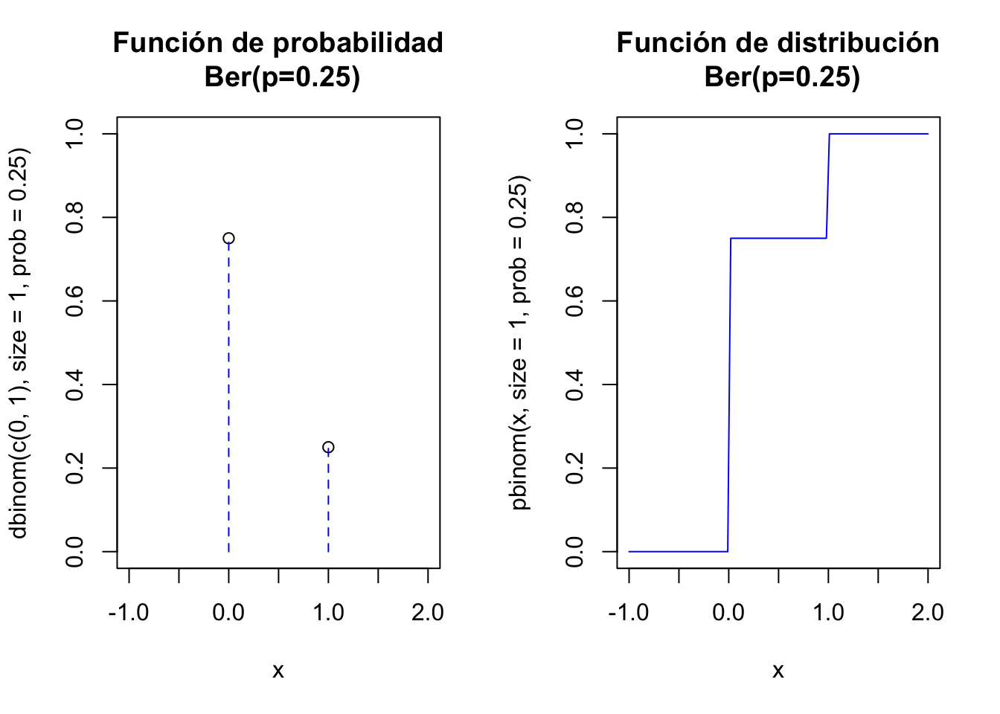
3.1.7 Gráficas interactivas \(Ber(p)\)
Para ejecutar el siguiente gráfico interactivo, solamente tienes que cargar el paquete shiny en tu ordenador y luego copiar/pegar las siguientes instrucciones. De este modo podrás observar los cambios en las distribuciones variando los parámetros.
sliderInput("p_ber", label = "Probabilidad éxito p:",
min = 0.01, max = 0.99, value = 0.25, step = 0.01)
renderPlot({
par(mfrow=c(1,2))
p=input$p_ber
plot(x=c(0,1),y=dbinom(c(0,1),size=1,prob=p),
ylim=c(0,1),xlim=c(-0.5,2),xlab="x",pch=21,
main=paste0(c("Función de probabilidad\n
Ber(p=",p,")"),collapse=""),bg="black")
segments(x0=0,y0=0,x1=0,y1=1-p, col = "blue", lty =2)
segments(x0=1,y0=0,x1=1,y1=p, col = "blue", lty =2)
segments(x0=-1,y0=1-p,x1=0,y1=1-p, col = "blue", lty =2)
segments(x0=-1,y0=p,x1=1,y1=p, col = "blue", lty =2)
x=0:1
y=pbinom(x,size=1,prob=p)
curve(pbinom(x,size=1,prob=p),
xlim=c(-1,2),col="blue",
main=paste0(c("Función de distribución\n Ber(p=",p,")"),collapse="")
)
par(mfrow=c(1,1))
})3.2 Distribución binomial
Si repetimos \(n\) veces de forma independiente un experimento Bernoulli de parámetro \(p\).
El espacio muestral \(\Omega\) estará formado por cadenas de \(E\)’s y \(F\)’s de longitud \(n\) Consideremos la v.a.
\[X(\overbrace{EFFF\ldots EEF}^{n})=\mbox{número de éxitos en la cadena}.\]
3.2.1 Función de probabilidad de una binomial
Entonces su función de probabilidad es
\[ P_{X}(x)=\left\{ \begin{array}{ll} {n\choose x}\cdot p^x \cdot(1-p)^{n-x} &\mbox{ si } x=0,1,\ldots,n\\ 0 & \mbox{ en otro caso} \end{array}\right.. \]
3.2.2 Función de distribución de binomial
Su función de distribución no tiene una fórmula cerrada. Hay que acumular la función de probabilidad:
\[ \begin{eqnarray*} F_{X}(x)=P(X\leq x) & = & \sum_{i=0}^x P_X(i)\\ & = & \left\{ \begin{array}{ll} 0 & \mbox{ si } x\leq 0\\\displaystyle \sum_{i=0}^k {n\choose i}\cdot p^i \cdot (1-p)^{n-i} & \mbox{ si } \left\{ \begin{array}{l} k\leq x< k+1\\ k=0,1,\ldots,n. \end{array} \right.\\ 1 & \mbox{ si } n\leq x \end{array} \right.. \end{eqnarray*} \]
3.2.3 Números binomiales con R
Los números binomiales alculan el número de equipos de baloncestodistintos que (\(k=5\) jugadores) se pueden hacer con 6 jugadores (\(n=6\)).
Es decir cuántas manearas distintas hay para elegir (choose) 5 jugadores en un conjunto de 6 jugadores. Todo el mundo diría ¡¡¡6!!!. Efectivamente con R es
## [1] 6Con 10 jugadores el número de equipos de 5 distintos es bastante más grande
## [1] 252Y por ejemplo con un equipo de fútbol profesional que tiene en plantilla 22 jugadores (quitando los guardametas) se pueden formar ¡¡nada menos que!!
## [1] 646646un bonito número capicúa que nos da el número de equipos distintos que se pueden formar.
3.2.4 Distribución Binomial
En las anteriores circunstancias diremos que la v.a. sigue una ley de probabilidad binomial … con parámetros \(n\) y \(p\) y lo denotaremos así
\[X\equiv B(n,p).\]
Obviamente se tiene que una bernoulli es una binomial con \(n=1\)
\[B(1,p)=Ber(p).\]
Ejercicio
Calculad las funciones de distribución de una binomial \(B(n=1,p=0.3)\) y comprobar que coinciden con las distribuciones de una \(Ber(p=0.3)\).
3.2.5 Observaciones sobre la distribución binomial
- La probabilidad de fracaso se suele denotar con \(q=1-p\), sin ningún aviso adicional, con el fin de acortar y agilizar la escritura de las fórmulas.
- Su función de distribución no tienen una formula general, hay que calcularla con una función de R o python… En el siglo pasado se tabulaban en los libros de papel :-).
- En el material adicional os pondremos unas tablas de esta distribución para distintos valores de \(n\) y \(p\) para que disfrutéis de tan ancestral método de cálculo.
- Cualquier paquete estadístico, hoja de cálculo dispone de funciones para el cálculo de estas probabilidades, así que el uso de las tablas queda totalmente anticuado.
3.2.6 Esperanza de una \(X\) \(B(n,p)\)
Su esperanza es \[E(X)=\displaystyle\sum_{k=0}^n k \cdot {n \choose k }\cdot p^k\cdot q^{n-k} = n\cdot p.\]
La esperanza de \(X^2\) es
\[ \begin{eqnarray*} E(X^2)&=& \displaystyle\sum_{k=0}^n k^2 \cdot {n \choose k }\cdot p^k\cdot q^{n-k}\\ &=& n\cdot p\cdot q-(n\cdot p)^2. \end{eqnarray*} \]
3.2.7 Varianza de una \(X\) \(B(n,p)\)
Su varianza es
\[Var(X)=E(X^2)-\left(E(X)\right)^2=n\cdot p \cdot q=n\cdot p\cdot (1-p).\]
Su desviación típica es
\[\sqrt{n\cdot p\cdot q}=\sqrt{n\cdot p\cdot (1-p)}.\]
En otos temas veremos una forma sencilla del cálculo de la esperanza y varianza de una \(B(n,p)\) como las suma de n \(Ber(p)\) independientes.
Ejercicio
Justificar de forma intuitiva que si \(X_i\) con \(i=1,2,\ldots, n\) son v.a. \(Ber(p)\) independientes entonces \(X=\displaystyle\sum_{i=1}^n X_i\) sigue una distribuciń \(B(n,p).\)
3.2.8 Resumen v.a con distribución binomial \(B(n,p)\)
| \(X\) binomial | \(B(n,p)\) |
|---|---|
| \(D_X=\) | \(\{0,1,\ldots n\}\) |
| \(P_X(x)=P(X=x)=\) | \(\left\{\begin{array}{ll}{n\choose x}\cdot p^x\cdot (1-p)^{n-x} & \mbox{ si } x=0,1,\ldots,n\\0 & \mbox{ en otro caso.}\end{array}\right.\) |
| \(F_X(x)=P(X\leq X)=\) | no tiene fórmula (utilizad funciones de R o python) |
| \(E(X)=\) | \(n\cdot p\) |
| \(Var(X)=\) | \(n\cdot p \cdot (1-p)\) |
3.2.9 Cálculos binomial con R
Veamos los cálculos básicos con funciones de R para una v.a \(X\) con distribución binomial \(B(n=10,p=0.25)\).
Si queremos calcular con R algún valor de la función de distribución como por ejemplo \(F_X(0)=P(X\leq 0)\)
## [1] 0.05631351y si queremos por ejemplo \(F_X(4)=P(X\leq 4)\):
## [1] 0.92187313.2.10 Cálculos binomial con R
Sin embargo, si queremos calcular algún valor de la función de probabilidad como por ejemplo \(P(X=0)\):
## [1] 0.05631351o por ejemplo para \(P(X=4)\):
## [1] 0.1459983.2.11 Generación de muestras aleatorias con R
Generaremos una muestra aleatoria de 100 valores de una población \(B(20,0.5)\)
## [1] 12 11 9 11 6 6 12 5 7 11 12 11 8 8 11 11 7 11 9 10 9 10 14 8 8
## [26] 5 11 14 11 10 11 5 12 8 6 7 9 10 5 12 11 9 12 11 12 10 13 13 8 8
## [51] 9 7 6 9 10 9 16 13 6 6 8 8 11 9 12 15 9 7 12 11 9 8 9 8 11
## [76] 15 7 10 9 12 6 13 14 8 10 8 10 11 11 9 10 11 12 8 10 12 9 13 9 13Ejemplo
El ejemplo anterior correspondería a repetir 100 veces el experimento lanzar una moneda 20 veces y contar el número de caras.
3.2.12 Cálculos distribución binomial con python
Veamos los cálculos básicos con funciones de python para una v.a \(X\) con distribución binomial \(B(n=10,p=0.25)\).
Primero importamos la función binom de la librería scipy.stat
En general en el paquete scipy, la función de probabilidad se invocará con el método pmf, la de distribución con el método cdf mientras que una muestra aleatoria que siga esta distribución con el método rvs. En todos ellos aparecerá siempre el parámetro loc que se utiliza para desplazar el dominio de la variable aleatoria. Por ejemplo, en este caso
3.2.13 Cálculos distribución binomial con python
Para calcular los valores de la función de distribución como por ejemplo \(F_X(0)=P(X\leq 0)\) y \(F_X(4)=P(X\leq 4)\) utilizamos la función cdf
## 0.056313514709472656## 0.92187309265136719Notemos que al no indicar el valor de loc, se le asume que toma el valor 0.
3.2.14 Cálculos distribución binomial con python
Para calcular los valores de la función de probabilidad \(P(X=0)\) y \(P(X=4)\) utilizamos la función pmf:
## 0.056313514709472684## 0.14599800109863295Notemos que al no indicar el valor de loc, se le asume que toma el valor 0.
3.2.15 Cálculos distribución binomial con python
Si queremos generar una muestras aleatorias que siga una distribución binomial, podemos usar la función rvs. En este caso, generaremos una muestra aleatoria de 100 valores de una población \(B(20,0.5)\)
## array([6, 7, 9, 7, 4, 2, 9, 3, 3, 6, 7, 5, 6, 6, 6, 3, 6, 2, 6, 3, 6, 6, 7,
## 2, 5, 4, 5, 4, 4, 8, 5, 8, 7, 3, 6, 5, 6, 6, 4, 8, 2, 3, 5, 4, 4, 5,
## 5, 8, 4, 5, 5, 3, 5, 6, 3, 6, 4, 4, 6, 2, 1, 8, 7, 4, 3, 6, 5, 8, 9,
## 2, 9, 4, 5, 4, 2, 5, 4, 7, 4, 4, 9, 6, 3, 4, 7, 7, 4, 5, 6, 6, 4, 4,
## 3, 8, 5, 5, 6, 3, 5, 3])3.2.16 Cálculos distribución binomial con python
## array([ 6, 7, 6, 7, 5, 4, 5, 3, 8, 4, 7, 2, 8, 2, 10, 3, 4,
## 5, 2, 5, 4, 5, 7, 4, 6, 4, 4, 5, 6, 5, 6, 3, 9, 5,
## 1, 4, 5, 3, 4, 10, 5, 5, 6, 4, 5, 7, 6, 1, 5, 4, 6,
## 7, 5, 7, 2, 6, 10, 1, 3, 5, 5, 3, 9, 4, 5, 6, 5, 3,
## 10, 3, 8, 4, 4, 3, 4, 5, 1, 0, 3, 3, 6, 2, 4, 2, 5,
## 4, 9, 4, 4, 4, 5, 5, 4, 4, 6, 3, 3, 5, 2, 3])3.2.17 Cálculos binomial con python
Veamos algunos cálculos básicos con funciones de python para la binomial \(B(n=10,p=0.25)\).
## 0.98027229309082031## 0.18771171569824247## array([4, 5, 3, 5, 5, 6, 8, 4, 3, 4])3.2.18 Gráficas de la distribución binomial con R
El siguiente código de R dibuja las función de probabilidad y la de distribución de una \(B(n=10,p=0.25)\)
par(mfrow=c(1,2))
aux=rep(0,22)
aux[seq(2,22,2)]=dbinom(c(0:10),size=10,prob=0.25)
plot(x=c(0:10),y=dbinom(c(0:10),size=10,prob=0.25),
ylim=c(0,1),xlim=c(-1,11),xlab="x",
main="Función de probabilidad\n B(n=10,p=0.25)")
lines(x=rep(0:10,each=2),y=aux, type = "h", lty = 2,col="blue")
curve(pbinom(x,size=10,prob=0.25),
xlim=c(-1,11),col="blue",
main="Función de distribución\n B(n=10,p=0.25)")
par(mfrow=c(1,1))3.2.19 Gráficas de la distribución binomial con R
El siguiente código de R dibuja las función de probabilidad y la de distribución de una \(B(n=10,p=0.25)\)
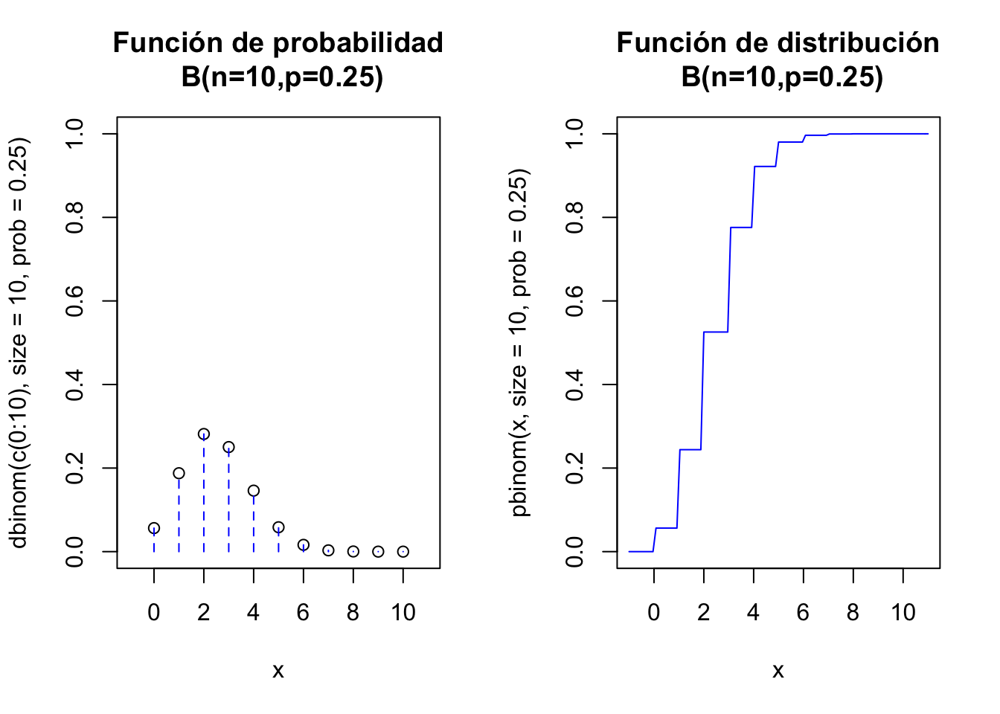
3.2.20 Gráficas interactivas binomial
Para ejecutar el siguiente gráfico interactivo, solamente tienes que cargar el paquete shiny en tu ordenador y luego copiar/pegar las siguientes instrucciones. De este modo podrás observar los cambios en las distribuciones variando los parámetros.
fluidPage(
fluidRow(
column(6,
sliderInput("n_binom", label = "Número de repeticiones n:",
min = 1, max = 50, value =10 , step = 1)),
column(6,
sliderInput("p_binom", label = "Probabilidad éxito p:",
min = 0.01, max = 0.99, value = 0.25, step = 0.01)
)
)
)
renderPlot({
n=input$n_binom
pr=input$p_binom
par(mfrow=c(1,2))
aux=rep(0,(n+1)*2)
aux[seq(2,(n+1)*2,2)]=dbinom(c(0:n),size=n,prob=pr)
plot(x=c(0:n),y=dbinom(c(0:n),size=n,prob=pr),
ylim=c(0,1),xlim=c(-1,n+1),xlab="x",
main=paste0(c("Función de probabilidad\n B(n=",n,",p=",pr,")"),collapse = ""))
lines(x=rep(0:n,each=2),y=aux, type = "h", lty = 2,col="blue")
curve(pbinom(x,size=n,p=pr),
xlim=c(-1,n+1),col="blue",
main=paste0(c("Función de distribución\n B(n=",n,",p=",pr,")"),
collapse = ""))
par(mfrow=c(1,1))
})3.2.21 Gráficos de la distribución binomial con python
Ejercicio
Buscad en la documentación de python cómo se dibuja la función de probabilidad y de distribución de una binomial y recread los gráficos anteriores.
Pista: Necesitaremos investigar más librerías:
3.2.22 Gráficos de la distribución binomial con python
n, p = 10, 0.25
x = np.arange(binom.ppf(0.01, n, p),binom.ppf(0.99, n, p))
fig =plt.figure(figsize=(5, 2.7))
ax = fig.add_subplot(1,2,1)
ax.plot(x, binom.pmf(x, n, p), 'bo', ms=8, label='binom pmf')
ax.vlines(x, 0, binom.pmf(x, n, p), colors='b', lw=5, alpha=0.5)
for tick in ax.xaxis.get_major_ticks():
tick.label.set_fontsize(5)
for tick in ax.yaxis.get_major_ticks():
tick.label.set_fontsize(5)
ax = fig.add_subplot(1,2,2)
ax.plot(x, binom.cdf(x, n, p), 'bo', ms=8, label='binom pmf')
ax.vlines(x, 0, binom.cdf(x, n, p), colors='b', lw=5, alpha=0.5)
for tick in ax.xaxis.get_major_ticks():
tick.label.set_fontsize(5)
for tick in ax.yaxis.get_major_ticks():
tick.label.set_fontsize(5)
fig.suptitle('Distribucion Binomial')
plt.show()3.2.23 Gráficos de la distribución binomial con python
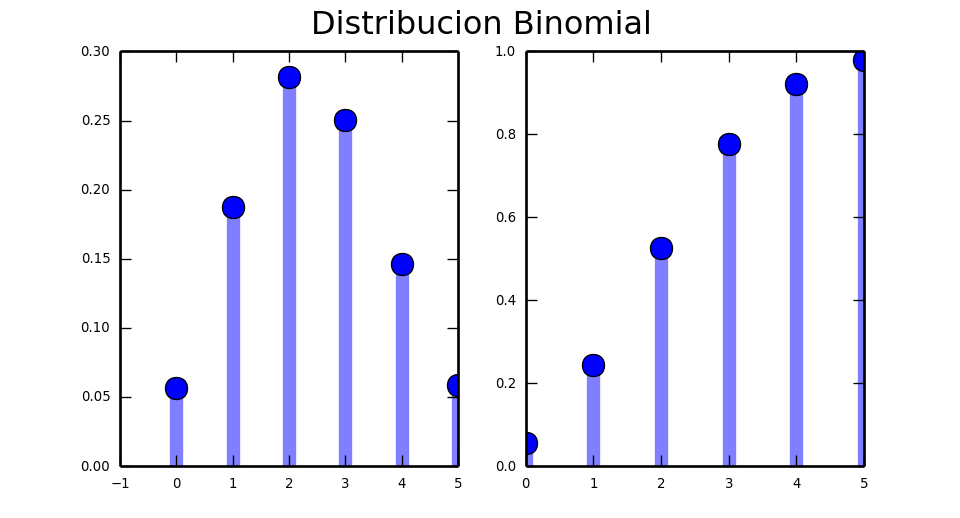
3.2.24 Ejemplo distribución binomial
Ejemplo: Número de bolas rojas extraídas de urna con reposición.
Tenemos una urna con \(100\) bolas de las cuales 40 son rojas y 60 blancas. Extraemos al azar una bola, anotamos su color y la devolvemos a (reponemos en ) la urna.
Supongamos que repetimos este proceso \(n=10\); reponiendo en cada ocasión la bola extraída.
Consideremos la variable aleatoria \(X=\) número de bolas rojas extraídas (con reposición) en \(n=10\) repeticiones del mismo experimento Bernoulli.
Bajo estas condiciones tenemos que repetimos \(n=10\) veces el mismo experimento Bernouilli con probabilidad de éxito (sacar bola roja) es
\[P(Roja)=P(Éxito)=p=\frac{40}{100}=0.4.\]
Así que la variable \(X=\)"número de bolas rojas extraídas de la urna (con reposición) en \(n=10\) ocasiones sigue una ley binomial \(B(n=10,p=0.4).\)
3.2.25 Ejemplo \(B(n=10,p=0.4).\)
Nos preguntamos:
- ¿Cuál es la probabilidad de que saquemos exactamente \(4\) rojas?
- ¿Cuál es la probabilidad de que saquemos al menos \(4\) rojas?
- ¿Cuál es la probabilidad de que saquemos menos de \(3\) rojas?
- ¿Cuál es el valor esperado del número de bolas rojas?
- ¿Cuál es la desviación típica del número de bolas rojas?
3.2.26 Ejemplo \(B(n=10,p=0.4).\)
Solución 1. ¿Cuál es la probabilidad de que saquemos exactamente \(4\) rojas?
Utilizando al función de probabilidad tenemos que
\[ \begin{eqnarray*} P_x(X=4)&=&{10\choose 4}\cdot 0.4^4\cdot (1-0.4)^{10-4} = \frac{10!}{(10-4)!\cdot 4!}\cdot 0.4^4\cdot 0.6^6\\ &=& \frac{7\cdot 8\cdot 9\cdot 10}{1\cdot 2\cdot 3\cdot 4}\cdot 0.4^4\cdot 0.6^6=0.2508227 \end{eqnarray*} . \]
Con R
## [1] 0.25082273.2.27 Ejemplo \(B(n=10,p=0.4).\)
Solución 2. ¿Cuál es la probabilidad de que saquemos al menos \(4\) rojas?
Al menos 4 rojas es \(P(X \geq 4)=1-P(X<4)=1-P(x\leq 3).\)
Así que calculemos \(P(X\leq 3)\)
\[ \begin{eqnarray*} P(x\leq 3)&=& P(X=0)+P(X=1)+P(X=2)+P(X=3)\\ &=& {10\choose 0}\cdot 0.4^0\cdot (1-0.4)^{10-0}+ {10\choose 1}\cdot 0.4^1\cdot (1-0.4)^{10-1}\\ &+&{10\choose 2}\cdot 0.4^2\cdot (1-0.4)^{10-2}+ {10\choose 3}\cdot 0.4^3\cdot (1-0.4)^{10-3}\\ &=&0.3822806 \end{eqnarray*} . \]
3.2.28 Ejemplo \(B(n=10,p=0.4).\)
Con R
## [1] 0.3822806Así que
\[P(X \geq 4 )=1-P(x< 4)=P(X\leq 3)=1-0.3822806=0.6177194.\]
3.2.29 Ejemplo \(B(n=10,p=0.4).\)
O con R también
## [1] 0.6177194Aunque en estos casos el parámetro lower.tail = FALSE es sin duda nuestra mejor opción:
## [1] 0.61771943.2.30 Ejemplo \(B(n=10,p=0.4).\)
Solución 3. ¿Cuál es la probabilidad de que saquemos menos de \(3\) rojas?
\[ \begin{eqnarray*} P(x< 3)&=& P(X\leq 2)= P(X=0)+P(X=1)+P(X=2)\\ &=& {10\choose 0}\cdot 0.4^0\cdot (1-0.4)^{10-0}+ {10\choose 1}\cdot 0.4^1\cdot (1-0.4)^{10-1}\\ &+& {10\choose 2}\cdot 0.4^2\cdot (1-0.4)^{10-2}\\ &=&0.1672898 \end{eqnarray*} . \]
## [1] 0.1672898## [1] 0.16728983.2.31 Ejemplo \(B(n=10,p=0.4).\)
Solución 4. ¿Cuál es el valor esperado del número de bolas rojas?
Como \(X\) es una \(B(n=10,p=0.4)\) sabemos que
\[E(X)=n\cdot p = 10\cdot 0.4=4.\]
Aunque en python tenemos la función stats que nos lo calcula directamente:
## E(X) = 4.03.2.32 Ejemplo \(B(n=10,p=0.4).\)
Solución 5. ¿Cuál es la desviación típica del número de bolas rojas?
La varianza es
\[ Var(X)=n\cdot p \cdot(1-p)=10\cdot 0.4\cdot 0.6=2.4. \]
Por lo tanto la desviación típica es
\[\sqrt{Var(X)}=\sqrt{2.4}= 1.5491933.\]
Aunque en python tenemos la función stats que nos lo calcula directamente:
## Var(X) = 2.43.3 Distribución geométrica
3.3.1 Distribución geométrica
Todos hemos jugado a, por ejemplo, tirar una moneda hasta que obtengamos la primera cara.
O también tirar una pelota a una canasta de baloncesto hasta obtener la primer la canasta.
Desde otro punto de vista también podemos intentar modelar el número de veces que accionamos una interruptor y la bombilla se ilumina hasta que falla.
O también el número de veces que un cajero automático nos da dinero hasta que falla.
La modelización de este tipo de problemas se consigue con la llamada distribución geométrica.
3.3.2 Distribución geométrica
- Repitamos un experimento Bernoulli, de parámetro p, de forma independiente hasta obtener el primer éxito.
- Sea \(X\) la v.a. que cuenta el número de fracasos antes del primer éxito. Por ejemplo que hayamos tenido \(x\) fracasos será una cadena de \(x\) fracasos culminada con un éxito. Más concretamente
\[P(\overbrace{FFF\ldots F}^{x}E)=P(F)^{x}\cdot P(E)=(1-p)^{x}\cdot p=q^{x}\cdot p.\]
3.3.3 Distribución geométrica
Su función de probabilidad es
\[ P_X(x)=P(X=x)=\left\{\begin{array}{ll} (1-p)^{x}\cdot p & \mbox{ si } x=0,1,2,\ldots\\ 0 &\mbox{ en otro caso} \end{array}\right.. \]
- De una v.a. como esta diremos que sigue una distribución geométrica de parámetro \(p\).
- La denotaremos por \(Ge(p)\).
- Su dominio es \(D_X=\{0,1,2,\ldots\}\).
3.3.4 Función de distribución geométrica
Calculemos P(\(X\leq 3\)).
Por la propiedad de la probabilidad del suceso complementario tenemos que
\[ P(X\leq 3 )=1-P(X> 3)=1-P(X\geq 4) \]
Efectivamente, el evento tenemos que \(X\leq 3\) es que hemos fracasado más de tres veces hasta conseguir el primer éxito; es decir hemos fracasado 4 o más veces, por lo tanto
\[ \{X>3\}=\{X\geq 4\}= \{FFFF\} \]
3.3.5 Función de distribución geométrica
Ahora, al ser los intentos sucesos independientes, tenemos que:
\[ \begin{eqnarray*} P(X>3) & = & P(\{FFFF\})= P(F)\cdot P(F)\cdot P(F)\cdot P(F)\\ &=& (1-p)\cdot (1-p)\cdot (1-p)\cdot (1-p)= (1-p)^{3+1}\\\ &=&(1-p)^{4}. \end{eqnarray*} \]
Calculamos
\[F_X(3)=P(X\leq 3)=1-P(X>3)=1-(1-p)^{3+1}.\]
Por lo que podemos generalizar a cualquier entero positivo \(k=0,1,2,\ldots\)
\[F_X(k)=P(X\leq k)=1-(1-p)^{k+1}\mbox{ si } k=0,1,2,\ldots\]
3.3.6 Función de distribución geométrica
En general tendremos que
\[ F_X(x)=P(X\leq x)= \left\{\begin{array}{ll} 0 & \mbox{ si } x<0\\ 1- (1-p) & \mbox{ si } k=0\leq x <1\\ 1- (1-p)^2 & \mbox{ si } k=1\leq x <2\\ 1- (1-p)^3 & \mbox{ si } k=2\leq x <3\\ 1- (1-p)^{k+1} & \mbox{ si } \left\{ \begin{array}{l}k\leq x< k+1\\\mbox{para } k=0,1,2,\ldots\end{array} \right.\end{array}\right. \]
3.3.7 Función de distribución geométrica
De forma más compacta tendremos que
\[ F_X(x)=P(X\leq x)= \left\{\begin{array}{ll} 0 & \mbox{ si } x<0\\ 1- (1-p)^{k+1} & \mbox{ si } \left\{ \begin{array}{l}k\leq x< k+1\\\mbox{para } k=0,1,2,\ldots\end{array} \right.\end{array} \right. \]
Notemos que si \(k=0,1,2,\ldots\) el límite de la función de distribución es
\[ \displaystyle\lim_{k\to +\infty } F_X(k)=\lim_{k\to +\infty } 1-(1-p)^{k+1}= 1 \]
ya que \(0<1-p<1\).
3.3.8 Sumas derivadas series geométricas
Recordemos del tema de variables aleatorias que
- Si \(|r|<1\) también son convergentes las derivadas, respecto de \(r\), de la serie geométrica y convergen a la derivada correspondiente. Así tenemos que \[ \begin{eqnarray*} \left(\sum_{k=0}^{+\infty} r^k\right)'&= & \sum_{k=1}^{+\infty}k\cdot r^{k-1} &=& \left(\frac1{1-r}\right)'=\frac1{(1-r)^2}\\ \left(\sum_{k=0}^{+\infty} r^k\right)^{''}&=& \sum_{k=2}^{+\infty}k \cdot(k-1)\cdot r^{k-2}&=&\left(\frac1{1-r}\right)^{''}=\frac2{(1-r)^3} \end{eqnarray*}. \]
3.3.9 Esperanza de una v.a. \(Ge(p)\)
Recordemos que \(P(X=x)=(1-p)^x\cdot p\) si \(x=0,1,2,\ldots\) y aplicado la fórmula anterior con \(r=1-p\)
\[ \begin{eqnarray*} E(X)&=&\sum_{x=0}^{+\infty} x\cdot P_x(x)=\sum_{x=0}^{+\infty} x\cdot (1-p)^x\cdot p= p\cdot (1-p) \cdot \sum_{x=1}^{+\infty} x\cdot (1-p)^{x-1}\\ &=& p\cdot (1-p)\cdot \frac{1}{(1-(1-p))^2}=p\cdot (1-p)\cdot \frac{1}{p^2}=\frac{1-p}{p} \end{eqnarray*}. \]
3.3.10 Valor \(E(X^2)\) de una v.a. \(Ge(p)\)
\[ \begin{eqnarray*} E(X^2)&=&\sum_{x=0}^{+\infty} x^2\cdot P_X(x)=\sum_{x=1}^{+\infty} x^2\cdot (1-p)^x\cdot p\\ &=& \sum_{x=1}^{+\infty} (x\cdot (x-1)+x)\cdot (1-p)^{x}\cdot p\\ &=& \sum_{x=1}^{+\infty} x\cdot (x-1)\cdot (1-p)^{x}\cdot p+\sum_{x=1}^{+\infty} x \cdot (1-p)^{x}\cdot p\\ &=& (1-p)^{2}\cdot p\cdot \sum_{x=2}^{+\infty} x\cdot (x-1)\cdot (1-p)^{x-2}\\ & +& (1-p)\cdot p\sum_{x=1}^{+\infty} x \cdot (1-p)^{x-1} = \ldots \end{eqnarray*}. \]
3.3.11 Valor \(E(X^2)\) de una v.a. \(Ge(p)\)
\[ \begin{eqnarray*} E(X^2)&=&\ldots\\ &=& (1-p)^{2}\cdot p\cdot \sum_{x=2}^{+\infty} x\cdot (x-1)\cdot (1-p)^{x-2}\\ & +& (1-p)\cdot p\sum_{x=1}^{+\infty} x \cdot (1-p)^{x-1}\\ &=& p\cdot (1-p)^2 \frac{2}{(1-(1-p))^3}+ (1-p)\cdot p \frac{1}{(1-(1-p))^2}\\ &=& p\cdot (1-p)^2 \frac{2}{p^3}+ (1-p)\cdot p \frac{1}{p^2}\\ &=&\frac{2\cdot (1-p)^2}{p^2}+\frac{1-p}{p} \end{eqnarray*}. \]
3.3.12 Varianza de una v.a. \(Ge(p)\)
\[ \begin{eqnarray*} Var(X)&=&E(X^2)-E(X)^2=\frac{2\cdot (1-p)^2}{p^2}+\frac{1-p}{p}-\left(\frac{1-p}{p}\right)^2\\ &=& \frac{2\cdot (1-p)^2+p\cdot(1-p)-(1-p)^2}{p^2}=\frac{(1-p)^2+p\cdot(1-p)}{p^2}\\ &=& \frac{1-2\cdot p + p^2+p-p^2}{p^2}\\ &=& \frac{1-p}{p^2}. \end{eqnarray*} \] Y su desviación típica será
\[\sqrt{Var(X)}=\sqrt{\frac{1-p}{p^2}}.\]
3.3.13 Resumen \(Ge(p)\) empezando en 0
| \(X=\) Geométrica (empieza en \(0\)) | número de fracasos para conseguir el primer éxito |
|---|---|
| \(D_X=\) | \(\{0,1,\ldots n,\ldots\}\) |
| \(P_X(x)=P(X=x)=\) | \(\left\{\begin{array}{ll}(1-p)^{x}\cdot p & \mbox{ si } x=0,1,2,\ldots \\0 & \mbox{ en otro caso.}\end{array}\right.\) |
| \(F_X(x)=P(X\leq X)=\) | \(\left\{\begin{array}{ll} 0 & \mbox{ si } x<0\\ 1- (1-p)^{k+1} & \mbox{ si } \left\{ \begin{array}{l}k\leq x< k+1\\\mbox{para } k=0,1,2,\ldots\end{array} \right.\end{array}\right.\) |
| \(E(X)=\frac{1-p}{p}\) | \(Var(X)=\frac{1-p}{p^2}\) |
3.3.14 La variable geométrica que cuenta los intentos para obtener el primer éxito.
- Supongamos que sólo estamos interesados en el número de intentos para obtener el primer éxito.
- Si definimos \(Y\)= número de intentos para obtener el primer éxito. Entonces \(Y=X+1\) donde \(X\equiv Ge(p)\).
- Su dominio es valores es \(D_Y=\{1,2,\ldots\}\)
- la media se incrementa en un intento debido al éxito \(E(Y)=E(X+1)=E(X)+1=\frac{1-p}{p}+1=\frac1{p}\).
- La varianza es la misma \(Var(Y)=Var(X+1)=Var(X)=\frac{1-p}{p^2}\).
3.3.15 Resumen \(Ge(p)\) comenzando en \(1\).
| \(Y\) geométrica (que cuenta el éxito empieza en 1) | número de INTENTOS para OBTENER el primer éxito |
|---|---|
| \(D_Y=\) | \(\{1,2,\ldots n,\ldots\}\) |
| \(P_Y(y)=P(Y=y)=\) | \(\left\{\begin{array}{ll}(1-p)^{y-1}\cdot p & \mbox{ si } y=1,2,3,\ldots\\ 0 & \mbox{ en otro caso.}\end{array}\right.\) |
| \(F_Y(y)=P(Y\leq y)=\) | \(\left\{\begin{array}{ll} 0 & \mbox{ si } y<1\\ 1- (1-p)^{k} & \mbox{ si } \left\{ \begin{array}{l}k\leq y< k+1\\\mbox{para } k=1,2,3,\dots \end{array} \right.\end{array}\right.\) |
| \(E(X)=\frac1{p}\) | \(Var(X)=\frac{1-p}{p^2}\) |
3.3.16 Propiedad de la falta de memoria
Sea \(X\) una v.a. discreta con dominio \(D_X=\{0,1,2,\ldots\}\), con \(P(X=0)=p\).
Entonces \(X\) sigue una ley \(Ge(p)\) sí y sólo si
\[ P\left(X> k+j\big| X\geq j\right)=P(X> k) \] para todo \(k,j=0,1,2,3\ldots\).
3.3.17 Propiedad de la falta de memoria
Demostración
Si es geométrica entonces el lado derecho de la igualdad es
\[ P(X>k)=1-P(X\leq k)=1-\left(1-(1-p)^{k+1}\right)=(1-p)^{k+1} \]
El lado de izquierdo es
\[ \begin{eqnarray*} P\left(X> k+j\big| X\geq j\right)&=&\frac{P\left(\{X> k+j\}\cap \{X\geq j\} \right)}{P\left(X\geq j\right)}= \frac{P\left(X>k+j \right)}{P\left(X\geq j \right)} = \frac{1-P(X\leq k+j)}{1-P(X\leq j-1)}\\ &=& \frac{1-(1-(1-p)^{k+j+1})}{1-(1-(1-p)^{j-1+1})} =\frac{(1-p)^{k+j+1}}{(1-p)^{j}} = (1-p)^{k+1} \end{eqnarray*} \]
Lo que demuestra la igualdad.
Para demostrar el recíproco tomemos \(j=1\) y \(k\geq 0\) entonces por la propiedad de la pérdida de memoria
\[ P\left(X> k+1\big| X\geq 1\right)=P(X> k) \]
Como sabemos \(P(X=0)=p\) tenemos \(P(X \geq 1 )=1-P(X<1)=1-P(X=0)=1-p\)
Luego combinado las igualdades tenemos que
\[ P\left(X> k+1\big| X\geq 1\right)=\frac{P(X>k+1, X\geq 1)}{P(X\geq 1)}=\frac{P(X>k+1)}{P(X\geq 1)}=P(X>k). \] Así podemos poner que
\[ \begin{eqnarray*} P(X>k+1)&=&P(X\geq 1)\cdot P(X>k)=\left(1-P(X<1)\right)\cdot P(X>k)\\ &=&\left(1-P(X=0)\right)\cdot P(X>k)=(1-p)\cdot P(X>k). \end{eqnarray*} \]
Es decir en general tenemos que
\[ P(X>k+1)=(1-p)\cdot P(X>k) \] Del mismo modo para \(j=2\)
\[ P(X>k+2)=(1-p)\cdot P(X>k+1) \]
Restando la primera igualdad de la última obtenemos.
\[ P(X>k+1)-P(X>k+2)=(1-p)\cdot P(X>k)-(1-p)\cdot P(X>k+1) \]
de donde operando en cada lado de la igualdad obtenemos la recurrencia
\[ [1-P(X\leq k+1)]-[1-P(X\leq k+2)]=(1-p)\cdot [P(X>k)-P(X>k+1)] \]
Ahora operando
\[ P(X\leq k+2)-P(X\leq k+1)=(1-p)\cdot[1-P(X\leq k)-\left(1-P(X\leq k+1)\right)] \] \[ P(X=k+2)=(1-p)\cdot[P(X\leq k+1)-P(X\leq k)] \] \[ P(X=k+2)=(1-p)\cdot P(X=k+1) \]
De forma similar obtenemos
\[ P(X=k+1)=(1-p)\cdot P(X=k) \] Utilicemos la recurrencia anterior para calcular todas las probabilidades a partir de la \(P(X=0)=p\); que vienen dadas por:
\[ \begin{eqnarray*} P(X=0)&=& p\\ P(X=1)&=&P(X=0+1)= (1-p)\cdot P(X=0) =(1-p)\cdot p\\ P(X=2)&=&P(X=1+1)= (1-p)\cdot P(X=1)=(1-p)\cdot (1-p)\cdot p=(1-p)^2\cdot p\\ \ldots \ldots\ldots && \ldots \ldots \ldots \ldots\ldots\ldots\ldots\ldots\ldots\ldots\ldots\ldots\ldots\ldots\ldots\ldots\ldots\ldots\ldots\ldots\ldots\ldots\ldots\ldots\\ P(X=k)&=&P(X=(k-1)+1)= (1-p)\cdot P(X=k-1)=(1-p)\cdot (1-p)^{k-1}\cdot p=(1-p)^{k}\cdot p \end{eqnarray*}. \] Lo que demuestra el recíproco, es decir que \(X\) es \(Geom(p)\).
3.3.18 Falta de memoria
La propiedad de la falta de memoria
\[ P(X> k+j\big|X \geq j)=P(X > k) \]
la igualdad anterior significa que aunque ya llevemos al menos \(j\) fracasos la probabilidad de que fracasemos \(k\) veces más no disminuye; es la misma que si empezáramos de nuevo el experimento.
A este efecto se le suele etiquetar con la frase el experimento carece de memoria o es un experimento sin memoria (Memoryless Property).
3.3.19 Ejemplo falta de memoria
Un ejemplo muy sencillo nos aclarará el alcance de esta propiedad
Ejercicio: la llave que abre la puerta
Tenemos un llavero con 10 llaves, solo una de ellas abre una puerta. Cada vez que probamos una llave y falla olvidamos que llave hemos probado. ¿Cuál es la probabilidad de que si ya lo hemos intentado 5 veces necesitemos más de 4 intentos adicionales para abrir la puerta?
Tomemos \(k=4,j=5\), aplicando la propiedad de la falta de memoria
\[ P(X> 4+5/X \geq 5)=P(X > 4) \]
Después de 5 fracasos no estamos más cerca de abrir la puerta. La propiedad de la falta de memoria nos dice que en después de cada intento es como si empezásemos de nuevo a abrir la puerta. Tras 5 fracasos la probabilidad de que fallemos más de 4 veces más es la misma.
3.3.20 Ejemplo falta de memoria
¿Cuál es el número esperado de fracasos hasta abrir la puerta
\[ E(X)=\frac{1-p}{p}=\frac{1-\frac{1}{10}}{\frac{1}{10}}=\frac{\frac{9}{10}}{\frac{1}{10}}=9. \]
La varianza es
\[ Var(X)=\frac{1-p}{p^2}=\frac{1-\frac{1}{10}}{\left(\frac{1}{10}\right)^2}=\frac{\frac{9}{10}}{\frac{1}{100}}= 90. \]
La desviación típica es \(\sqrt{90}=9.486833.\)
3.3.21 Ejemplo: El clásico del fútbol
Ejemplo: partidos hasta que el Barça gana al Madrid
Los partidos Real Madrid FC Barcelona de la liga española se suelen denominar El Clásico, sean en el Bernabeu (estadio del Real Madrid) o en el Camp Nou (estadio del Barça)
Sea \(Y\) la variable que cuenta el número de veces que en un partido de fútbol de la liga el Real Madrid pierde contra el Barça sea en el Camp Nou o el Calderón.
Nuestra amiga Aina es muy culé (hincha del Barça) quiere averiguar cuántos partidos consecutivos de El Clásico tiene que ver hasta ver ganar al Barça por primera vez.
Le interesa estimar cuánto le va a costar este capricho. Tendrá que comprar las entradas y pagar los viajes de Barcelona a Madrid.
Para ello consulta datos historicos de El clásico en la wikipedia y averigua que hasta el 3 de marzo de 2019 el Real Madrid ganó en 72 ocasiones el Barça en 72 y empataron 34 veces, en total se han jugado 178 Clásicos.
La pregunta es: ¿Cuál es la probabilidad de no ver ganar al Barça en al menos tres partidos consecutivos?
3.3.22 Variable geométrica: El clásico
Como nuestro aficionada tiene un tía que juega mucho al fútbol en su consola y con los datos que le damos estima que la probabilidad de que el Barça gane un clásico cualquiera es
\[P(Barça)=\frac{72}{178}=0.4045.\]
Supongamos pues que nuestro experimento de fútbol sigue una ley geométrica con probabilidad de éxito \(p=P(Barça)=\frac{72}{178}.\)
Entonces si \(X\) es el número de partidos que pierde el Barça antes de que gane el primero seguirá una ley \(Ge(p=\frac{72}{178})\).
Así que lo que nos pregunta Aina es la siguiente probabilidad
\[P(X>3)=1-P(X\leq 3)=1-\left(1-\frac{72}{178}\right)^4=0.8742.\]
Así que Aina tiene una probabilidad del \(87.42\%\) de que necesite ver al menos no ganar al Barça 3 partidos antes de ver uno en el que gane.
3.3.23 Variable geométrica: El clásico
Ejercicio
Bajo las condiciones del problema Barça-Madrid de nuestra amiga Aina ¿cuál es el valor esperado de \(X\)? ¿y su varianza?
\[X=Ge\left(p=\frac{72}{178}=0.4045\right)\]
entonces
\[E(X)=\frac{1-p}{p}=\frac{1-0.4045}{0.4045}=1.4722\]
y
\[Var(X)=\frac{1-p}{p^2}=\frac{1-0.4045}{0.4045^2}=3.6397\]
La desviación típica es \[\sqrt{3.6397}=1.9078.\]
3.3.24 Cálculos con R
Veamos los cálculos básicos con R para la distribución geométrica \(Ge(p=0.25)\). R implementa la geométrica que cuenta el número de fracasos.
\(P(X=0)=(1-0.25)^0\cdot 0.25^1=0.25\)
## [1] 0.25\(P(X\leq 0)=1- (1-0.25)^{0+1}=1-0.75=0.25\)
## [1] 0.253.3.25 Cálculos con R
\(P(X\leq 4)=1-(1-0.25)^{4+1}=1-0.75=1-0.75^5=0.7626953.\)
## [1] 0.7626953Una muestra aleatoria de tamaño 25 de una \(Ge(0.25)\)
## [1] 5 4 1 6 10 0 0 10 7 0 6 2 1 3 0 2 5 0 0 5 5 3 3 2 23.3.26 Gráficos con R el código
par(mfrow=c(1,2))
x=c(0:10)
plot(x=x,y=dgeom(x,prob=0.25),
ylim=c(0,1),xlim=c(-1,11),xlab="x",
main="Función de probabilidad\n Ge(p=0.25)")
lines(x=rep(0:10,each=2),y=aux, type = "h", lty = 2,col="blue")
aux0=dgeom(c(0:10),prob=0.25)
ceros=rep(0,21)
ceros
aux=ceros
aux[2*(c(1:11))]<-aux0
curve(pgeom(x,prob=0.25),
xlim=c(-1,10),col="blue",
main="Función de distribución\n Ge(p=0.25)")
par(mfrow=c(1,1))3.3.27 Los gráficos con R
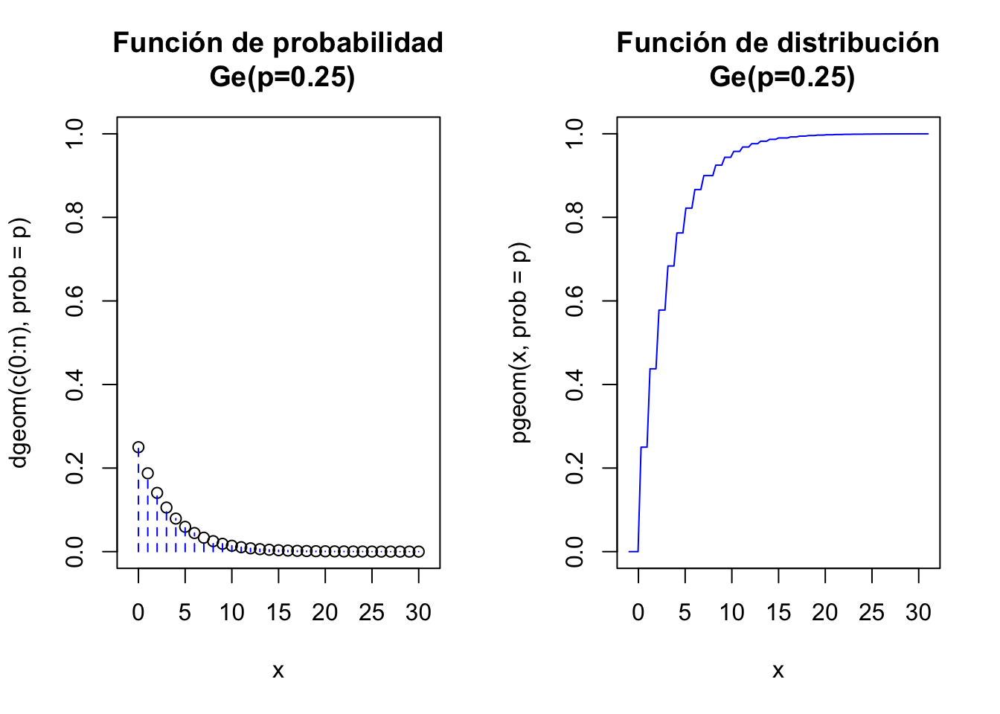
3.3.28 Gráficas interactivas geométrica
Para ejecutar el siguiente gráfico interactivo, solamente tienes que cargar el paquete shiny en tu ordenador y luego copiar/pegar las siguientes instrucciones. De este modo podrás observar los cambios en las distribuciones variando los parámetros.
sliderInput("p_geom", label = "Probabilidad de éxito:",
min = 0.01, max = 0.99, value =0.25 , step = 0.01)
renderPlot({
par(mfrow=c(1,2))
p=input$p_geom
n=30
aux=rep(0,(n+1)*2)
aux[seq(2,(n+1)*2,2)]=dgeom(c(0:n),prob=p)
plot(x=c(0:n),y=dgeom(c(0:n),prob=p),
ylim=c(0,1),xlim=c(-1,n+1),xlab="x",
main=paste0(c("Función de probabilidad\n Ge(p=",p,")"),collapse = ""))
lines(x=rep(0:n,each=2),y=aux, type = "h", lty = 2,col="blue")
curve(pgeom(x,prob=p),
xlim=c(-1,n+1),col="blue",
main=paste0(c("Función de distribución\n Ge(p=",p,")"),collapse = ""))
par(mfrow=c(1,1))
})3.3.29 Cálculos con python
Veamos los cálculos básicos con python para la distribución geométrica \(Ge(p=0.25)\). scipy.stats implementa la distribución geométrica que cuenta el número intentos así que empieza en 1.
Cargamos la función de la librería
3.3.30 Cálculos con python
La función de probabilidad es geom.pmf(x,p,loc=0)=geom.pmf(x,p) es un geométrica que cuenta el número de intentos para obtener el primer éxito el valor por defecto del último parámetro es loc=0.
Si queremos la que cuenta el número de fracasos para obtener el primer éxito (la geométrica que empieza en 0) tenemos que usar geom.pmf(x,p,loc=-1).
Es decir geom.pmf(x,p,loc=-1)=geom.pmf(x-1,p,loc=0)
3.3.31 Cálculos con python
Veamos pues los cálculos para la \(Ge(p)\) que empieza en \(0\).
\(P(X=0)=(1-0.25)^0\cdot 0.25^1=0.25\)
## 0.25\(P(X\leq 0)=1- (1-0.25)^{0+1}=1-0.75=0.25\)
## 0.253.3.32 Cálculos con python
\(P(X\leq 4)=1-(1-0.25)^{4+1}=1-0.75=1-0.75^5=0.7626953.\)
## 0.7626953125Una muestra aleatoria de tamaño 25 de una \(Ge(0.25)\)
## array([ 0, 6, 5, 3, 3, 0, 3, 0, 6, 8, 4, 5, 4, 0, 18, 4, 7,
## 3, 7, 3])3.3.33 Cálculos con python
Ejercicio
Qué probabilidades son las que calcula el siguiente código y qué tipo de variables geométricas son?
## array([ 0. , 0.3 , 0.51 , 0.657 , 0.7599])## array([ 0.3 , 0.51 , 0.657 , 0.7599 , 0.83193])3.3.34 Cálculos con python esperanza y varianza
Con python también podemos calcular directamente algunos parámetros asociado a una función de distribución predefinida
## (array(4.0), array(12.0))## (array(3.0), array(12.0))3.3.35 Cálculos con python esperanza y varianza
Ejercicio
Comprobad que las medias y las varianzas calculadas en el código anterior, corresponden a una \(Ge(p=0.3)\) empezando en \(1\) y a a un \(Ge(p=0.3)\) empezando en \(0\).
¿Son las varianzas siempre iguales?
3.3.36 Gráficos con python
p = 0.25
x = np.arange(geom.ppf(0.01, p),geom.ppf(0.99, p))
fig =plt.figure(figsize=(5, 2.7))
ax = fig.add_subplot(1,2,1)
ax.plot(x, geom.pmf(x, p), 'bo', ms=5, label='geom pmf')
ax.vlines(x, 0, geom.pmf(x, p), colors='b', lw=2, alpha=0.5)
for tick in ax.xaxis.get_major_ticks():
tick.label.set_fontsize(5)
for tick in ax.yaxis.get_major_ticks():
tick.label.set_fontsize(5)
ax = fig.add_subplot(1,2,2)
ax.plot(x, geom.cdf(x, p), 'bo', ms=5, label='geom pmf')
ax.vlines(x, 0, geom.cdf(x, p), colors='b', lw=2, alpha=0.5)
for tick in ax.xaxis.get_major_ticks():
tick.label.set_fontsize(5)
for tick in ax.yaxis.get_major_ticks():
tick.label.set_fontsize(5)
fig.suptitle('Distribucion Geometrica')
plt.show()3.3.37 Gráficos con python

3.4 Distribución binomial negativa
3.4.1 El problema de la puerta con dos cerraduras
Supongamos que disponemos de 10 llaves distintas y tenemos que abrir una puerta con dos cerraduras.
Comenzamos por la primera cerradura, de tal forma que cada vez olvidamos que llave que hemos probado.
Una vez abierta la primera cerradura probamos de igual forma con la segunda hasta que también la abrimos.
Sea \(X=\) la v.a. que cuenta el número de fracasos hasta abrir la puerta.
Acertar una llave de la puerta es un experimento Bernoulli con probabilidad de éxito \(p=0.1\). Lo repetiremos hasta obtener 2 éxitos.
3.4.2 Distribución binomial negativa
En general tendremos un experimento Bernoulli con probabilidad de éxito \(0<p<1\) y tal que:
- Repetimos el experimento hasta obtener el \(n\)-ésimo éxito ¡¡abrir la maldita puerta!!.
- Sea \(X\) la v.a que cuenta el número fallos hasta abrir la puerta, es decir, hasta conseguir el n-ésimo éxito. Notemos que no contamos los éxitos, solo contamos los fracasos
3.4.3 Distribución binomial negativa
Si representamos como es habitual un suceso son una cadena de F’s y E’s.
Si \(n=2\) estos son algunos sucesos elementales \[\{EE,FEE,EFE, FFEE,FEFE,EFFE,FFFEE,FFEFE,FEFFE,EFFFE\}\]
\[P(X=0)=P(\{EE\})=p^2\]
\[P(X=1)=P(\{FEE,EFE\})=2\cdot (1-p)\cdot p^2\] \[P(X=2)=P(\{FFEE,FEFE,EFFE\})=3\cdot (1-p) 2\cdot p^2\]
\[P(X=3)=P(\{FFFEE,FFEFE,FEFFE,EFFFE\})=4\cdot (1-p)^3\cdot p^2\]
3.4.4 Distribución binomial negativa
En general su función de probabilidad es
\[ P_{X}(k)=P(X=k)=\left\{\begin{array}{ll} {{k+n-1}\choose{n-1}} \cdot (1-p)^{k}\cdot p^n & \mbox{si } k=0,1,\ldots\\ 0 & \mbox{en otro caso}\end{array}\right. \]
3.4.5 Distribución binomial negativa
Una v.a. con este tipo de distribución recibe el nombre de binomial negativa y la denotaremos por \(BN(n,p)\).
Notemos que \(BN(1,p)=Ge(p)\).
3.4.6 Distribución binomial negativa
Demostración
Justifiquemos el resultado. Sea \(X\) una \(BN(n,p)\) y sea \(k=0,1,2,\ldots\).
\[P(X=k)=P(\mbox{Todas las cadenas de E's y F' con $k$ F, con $n$ E y acabadas en E})\]
\[ \overbrace{\underbrace{\overbrace{EFFF\ldots EEF}^{n-1 \quad \mbox{Éxitos}.}}}_{k \quad\mbox{Fracasos}}^{k+n-1\mbox{ posiciones}}E \]
De estas cadenas hay tantas como maneras de elegir de entre las \(k+n-1\) primeras posiciones \(n-1\) para colocar los éxitos, esta cantidad es el número binomial
\[{k+n-1\choose n-1}\]
3.4.7 Números binomiales negativos
Dados dos enteros positivos \(n\) y \(k\) se define en numero binomial negativo como
\[\binom{-n}{k}=\frac{(-n)(-n-1)\cdots (-n-k+1)}{k!}.\]
Se cumple que
\[ (t+1)^{-n}=\sum_{k=0}^{+\infty}\left(\begin{array}{c} -n \\ k\end{array}\right) t^{k} \]
3.4.8 Números binomiales negativos
Con R es la misma función que para los números binomiales
\[ \begin{eqnarray*} {-6\choose 4}&=&\frac{-6\cdot (-6-1)\cdot \cdot (-6-2)\cdot (-6-3) }{4!}\\ &=& \frac{-6\cdot(-7)\cdot (-8)\cdot (-9)}{24}\\ &=& \frac{3024}{24}=126. \end{eqnarray*} \]
Efectivamente obtenemos el mismo resultado
## [1] 1263.4.9 Esperanza de una \(BN(n,p)\)
Su esperanza es
\[E(X)=\displaystyle\sum_{k=0}^{+\infty} k\cdot {k+n-1\choose n-1} \cdot (1-p)^{k}\cdot p^n=n\cdot\frac{1-p}{p}.\]
La esperanza del cuadrado \(X^2\) es
\[E(X^2)=\displaystyle\sum_{k=0}^{+\infty} k^2\cdot {k+n-1\choose n-1} \cdot (1-p)^{k}\cdot p^n=n\cdot\frac{1-p}{p^2}+\left(n\cdot \frac{1-p}{p}\right)^2.\]
3.4.10 Varianza de una \(BN(n,p)\)
Por último la varianza es
\[ Var(X)=E(X^2)-E(X)^2= \]
\[=n\cdot \frac{1-p}{p^2}+\left(n\cdot \frac{1-p}{p}\right)^2-\left(n\cdot \frac{1-p}{p}\right)^2= n\cdot \frac{1-p}{p^2}.\]
y por tanto la desviación típica es
\[\sqrt{Var(X)} = \frac{\sqrt{n(1-p)}}{p}\]
3.4.11 Resumen Binomial Negativa \(BN(n,p)\)
| \(X\), \(BN(n,p)\) | Número de fracasos antes de conseguir el \(n\)-ésimo éxito. Probabilidad de éxito \(p\) |
|---|---|
| \(D_X=\) | \(\{0,1,2,3\ldots\}\) |
| \(P_X(k)=P(X=k)=\) | \(\left\{\begin{array}{ll} {k+n-1\choose n-1} \cdot (1-p)^{k}\cdot p^n & \mbox{si } k=0,1,\ldots \\ 0 & \mbox{en otro caso.}\end{array}\right.\) |
| \(F_X(x)=P(X\leq X)=\) | \(\begin{array}{l}\left\{\begin{array}{ll} 0 & \mbox{si } x<0\\\displaystyle\sum_{i=0}^{k} P(X=i) & \mbox{si }\left\{\begin{array}{l}k\leq x< k+1\\k=0,1,2,\ldots\end{array}\right.\end{array}\right. \\\mbox{Calcular la suma o utilizar funciones de R o python.} \end{array}\) |
| \(E(X)=n\cdot\frac{1-p}{p}\) | \(Var(X)=n\cdot \frac{1-p}{p^2}\) |
3.4.12 Ejemplo puerta dos cerraduras \(BN(n=2,p=0.1)\).
Ejercicio: Puerta con dos cerraduras
Recordemos nuestra puerta con dos cerraduras que se abren secuencialmente. Tenemos un manojo de 10 llaves casi idénticas. De manera que cada vez que probamos una llave olvidamos qué llave hemos usado.
Sea \(X\) la v.a que nos da el número de intentos fallidos hasta abrir abrir la puerta.
3.4.13 Ejemplo \(BN(n,p)\)
Estamos interesado en modelar este problema. La preguntas son:
- ¿Cuál es la distribución de probabilidad de \(X\) la v.a que nos da el número fallos hasta abrir la puerta?
- ¿Cuál es la función de probabilidad y de distribución del \(X\)?
- ¿Cuál es la probabilidad de fallar exactamente 5 veces antes de abrir la puerta?
- ¿Cuál es la probabilidad de fallar más de 4?
- ¿Cuál es el número esperado de fallos? ¿Y su desviación típica?
3.4.14 Ejemplo dos cerraduras \(BN(n=2,p=0.1)\).
Solución 1. ¿Cuál es la distribución de probabilidad de \(X\) la v.a que nos da el número fallos hasta abrir la puerta?
Bajo estados condiciones tenemos que la probabilidad de “éxito” de cada intento es \(p=\frac{1}{10}=.01\). Como cada vez olvidamos qué llave hemos probado cada intento será independiente del anterior.
Así que la variable \(X\) que queremos modelar cuenta el número fallos de repeticiones sucesivas e independientes de un experimento \(Ber(p=0.1)\) hasta conseguir 2 éxitos en un experimento.
Por lo tanto podemos asegurar que \(X\) sigue un distribución \(BN(n=2,p=0.1).\)
3.4.15 Ejemplo \(BN(n=2,p=0.1)\)
Solución 2. ¿Cuál es la función de probabilidad y de distribución del \(X\)?
En general la función de probabilidad de una \(BN(n,p)\) es
\[ P_X(X=k)=P(X=k)= \left\{ \begin{array}{cc} {k+n-1\choose n-1} \cdot (1-p)^{k}\cdot p^n & \mbox{si } k=0,1,\ldots \\ 0 & \mbox{en otro caso.}\end{array}\right. \] En particular la función de probabilidad de una \(BN(n=2,p=0.1)\) es
\[ P_X(X=k)=P(X=k)= \left\{ \begin{array}{cc} {k+2-1\choose 2-1} \cdot 0.9^{k}\cdot 0.1^2 & \mbox{si } k=0,1,2,\ldots \\ 0 & \mbox{en otro caso.}\end{array}\right. \]
3.4.16 Ejemplo \(BN(n=2,p=0.1)\)
Simplificando
\[ P_X(X=k)=P(X=k)= \left\{ \begin{array}{cc} {k+1\choose 1} \cdot 0.9^{k}\cdot 0.1^2 & \mbox{si } k=0,1,2,\ldots \\ 0 & \mbox{en otro caso.}\end{array}\right. \]
3.4.17 Ejemplo \(BN(n=2,p=0.1)\)
La función de distribución en general es
\[ F_x(x)=P(X\leq x)= \left\{ \begin{array}{ll} 0 & \mbox{si } x<0 \\ \displaystyle\sum_{i=0}^{k }{i+n-1\choose n-1} \cdot (1-p)^{i+n-1}\cdot p^n & \mbox{si }\left\{\begin{array}{l} k\leq x< k+1\\k=0,1,2,\ldots\end{array}\right. \end{array} \right. \]
3.4.18 Ejemplo \(BN(n=2,p=0.1)\)
Simplificando para \(n=2\), \(p=0.1\).
\[ F_x(x)=P(X\leq x)= \left\{ \begin{array}{ll} 0 & \mbox{si } x<0 \\ \displaystyle\sum_{i=0}^{k }{i+1\choose 1} \cdot 0.9^{i+1}\cdot 0.1^2 & \mbox{si }\left\{\begin{array}{l} k\leq x< k+1\\k=0,1,2,\ldots\end{array}\right. \end{array} \right. \]
3.4.19 Ejemplo \(BN(n=2,p=0.1)\)
Solución 3. ¿Cuál es la probabilidad de fallar exactamente 5 veces antes de abrir la puerta?
\[ \begin{eqnarray*} P(X=5)&=&{5+2-1\choose 1} \cdot 0.9^{5}\cdot 0.1^2= {6\choose 1} \cdot 0.9^{5}\cdot 0.1^2\\ &=& 6\cdot 0.9^5\cdot 0.1^2= 0.0354294. \end{eqnarray*} \]
3.4.20 Ejemplo \(BN(n=2,p=0.1)\)
Solución 4. ¿Cuál es la probabilidad de fallar más de 4
Nos piden que
\[
P(X>4)=1-P(X\leq 4).
\]
Calculemos primero \(P(X\leq 4):\)
\[ \begin{eqnarray*} P(X\leq 4) &= & \displaystyle\sum_{x=0}^{4} P(X=x)=P(X=0)+P(X=1)+P(X=2)+P(X=3)+P(X=4)\\ &=& {0+2-1\choose 1} \cdot 0.9^{0}\cdot 0.1^2+ {1+2-1\choose 1} \cdot 0.9^{1}\cdot 0.1^2\\ &+& {2+2-1\choose 1} \cdot 0.9^{2}\cdot 0.1^2+ {3+2-1\choose 1} \cdot 0.9^{3}\cdot 0.1^2 \\ &+& {4+2-1\choose 1} \cdot 0.9^{4}\cdot 0.1^2=\ldots \end{eqnarray*} \]
3.4.21 Ejemplo \(BN(n=2,p=0.1)\)
\[ \begin{eqnarray*} P(X\leq 4)=\ldots &=& {1\choose 1} \cdot 0.9^{0}\cdot 0.1^2+ {2\choose 1} \cdot 0.9^{1}\cdot 0.1^2+ {3\choose 1} \cdot 0.9^{2}\cdot 0.1^2+ {4\choose 1} \cdot 0.9^{3}\cdot 0.1^2\\ &+& {5\choose 1} \cdot 0.9^{4}\cdot 0.1^2= 0.1^2+ 2\cdot 0.9 \cdot 0.1^2+ 3\cdot 0.9^2\cdot 0.1^2+ 4\cdot 0.9^3\cdot 0.1^2+ 5\cdot 0.9^4\cdot 0.1^2\\ = 0.114265 \end{eqnarray*}. \]
Por lo tanto
\[ P(X>4)=1-P(X\leq 4)=1-0.114265= 0.885735. \]
3.4.22 Ejemplo \(BN(n=2,p=0.1)\)
Solución 5. ¿Cuál es el número esperado de fallos? ¿Y su desviación típica?
Como \(X\) sigue una ley \(BN(n=2,p=0.1)\)
\[E(X)=n\cdot \frac{1-p}{p}=2\cdot \frac{1-0.1}{0.1}=18.\]
El número de fallos esperado es 18.
\[ Var(X)=n\cdot\frac{1-p}{p^2}=2 \cdot \frac{1-0.1}{0.1^2}=180. \]
La varianza de \(X\) es 180 y su desviación típica \(\sqrt{180}=13.41641.\)
3.4.23 Cálculos con R
La función de R para la función de probabilidad de la binomial negativa y sus parámetros básicos son
dnbinom(x, size, prob,...)`Donde size (\(n\)) es el número de éxitos y prob (\(p\)) la probabilidad de éxito.
Así en el ejemplo de la puerta \(X\) es una \(BN(n=size=2,p=prob=0.1)\). Por ejemplo \(P(X=5)\) que hemos calculado en el ejemplo anterior es
## [1] 0.03542943.4.24 Cálculos con R
De forma similar calculamos calculamos \(P(X\leq 4)\), \(P(X>4)=1-P(X\leq 4)\) y \(P(X>4)\).
## [1] 0.114265## [1] 0.885735## [1] 0.8857353.4.25 Cálculos con python
La función con python es nbinom.pmf(k, n, p, loc). Hay que cargarla desde scpi.stats
Recordemos que de nuevo se cumple que
3.4.26 Cálculos \(BN(n,p)\) con python
## 0.035429400000000041## 0.035429400000000041## 0.11426500000000003## 0.885734999999999943.4.27 Cálculos \(BN(n,p)\) con python
Generemos 100 observaciones aleatorias de una \(BN(n=2,0.1)\). Es decir serán las veces que hemos fallado hasta abrir la prueba 100 veces.
## array([28, 39, 30, 23, 36, 47, 2, 19, 20, 14, 4, 16, 20, 62, 7, 16, 18,
## 4, 5, 8, 64, 7, 19, 13, 14, 4, 31, 22, 35, 6, 38, 21, 24, 1,
## 27, 39, 11, 10, 21, 63, 82, 22, 17, 33, 1, 25, 10, 34, 8, 12, 49,
## 14, 9, 47, 2, 29, 5, 6, 23, 6, 4, 27, 15, 71, 14, 18, 11, 49,
## 3, 16, 13, 27, 14, 16, 24, 42, 10, 11, 44, 11, 9, 25, 7, 4, 13,
## 14, 18, 49, 19, 12, 42, 7, 5, 31, 22, 6, 19, 12, 20, 6])3.4.28 Cálculos \(BN(n,p)\) con python
La esperanza y la varianzade una \(BN(n=2,0.1)\) es
## E(X)=18.0## Var(X)=180.03.4.29 Gráficas de la binomial negativa con R
El siguiente código de R dibuja las función de probabilidad y la de distribución de una \(BN(n=2,p=0.1)\)
par(mfrow=c(1,2))
aux=rep(0,22)
aux[seq(2,22,2)]=dnbinom(c(0:10),size=2,prob=0.1)
plot(x=c(0:10),y=dnbinom(c(0:10),size=2,prob=0.1),
ylim=c(0,1),xlim=c(-1,11),xlab="x",
main="Función de probabilidad\n BN(n=2,p=0.1)")
lines(x=rep(0:10,each=2),y=aux, type = "h", lty = 2,col="blue")
curve(pnbinom(x,size=2,prob=0,1),
xlim=c(-1,11),col="blue",
main="Función de distribución\n BN(n=2,p=0.1)")
par(mfrow=c(1,1))3.4.30 Gráficas de la binomial negativa con R
El siguiente código de R dibuja las función de probabilidad y la de distribución de una \(BN(n=2,p=0.1)\)

3.4.31 Gráficas interactivas binomial negativa
Para ejecutar el siguiente gráfico interactivo, solamente tienes que cargar el paquete shiny en tu ordenador y luego copiar/pegar las siguientes instrucciones. De este modo podrás observar los cambios en las distribuciones variando los parámetros.
fluidPage(
fluidRow(
column(6,
sliderInput("n_nbinom", label = "Número de éxitos n:",
min = 1, max = 50, value =20 , step = 1)),
column(6,
sliderInput("p_nbinom", label = "Probabilidad de un éxito p:",
min = 0.01, max = 0.99, value = 0.8, step = 0.01)
)
)
)
renderPlot({
n=input$n_nbinom
pr=input$p_nbinom
par(mfrow=c(1,2))
aux=rep(0,(n+1)*2)
aux[seq(2,(n+1)*2,2)]=dnbinom(c(0:n),size=n,prob=pr)
plot(x=c(0:n),y=dnbinom(c(0:n),size=n,prob=pr),
ylim=c(0,1),xlim=c(-1,n+1),xlab="x",
main=paste0(c("Función de probabilidad\n BN(n=",n,",p=",pr,")"),collapse = ""))
lines(x=rep(0:n,each=2),y=aux, type = "h", lty = 2,col="blue")
curve(pnbinom(x,size=n,p=pr),
xlim=c(-1,n+1),col="blue",
main=paste0(c("Función de distribución\n BN(n=",n,",p=",pr,")"),
collapse = ""))
par(mfrow=c(1,1))
})3.4.32 Gráficos de la binomial negativa con python
Ejercicio
Buscad en los manuales de python cómo se dibuja la función de probabilidad y de distribución de una binomial. negativa
Necesitamos de nuevo más librerías
3.4.33 Gráficos de la binomial negativa con python
n, p = 10, 0.25
x = np.arange(0,nbinom.ppf(0.99, n, p))
fig =plt.figure(figsize=(5, 2.7))
ax = fig.add_subplot(1,2,1)
ax.plot(x, nbinom.pmf(x, n, p), 'bo', ms=5, label='nbinom pmf')
ax.vlines(x, 0, nbinom.pmf(x, n, p), colors='b', lw=2, alpha=0.5)
for tick in ax.xaxis.get_major_ticks():
tick.label.set_fontsize(5)
for tick in ax.yaxis.get_major_ticks():
tick.label.set_fontsize(5)
ax = fig.add_subplot(1,2,2)
ax.plot(x, nbinom.cdf(x, n, p), 'bo', ms=5, label='nbinom pmf')
ax.vlines(x, 0, nbinom.cdf(x, n, p), colors='b', lw=2, alpha=0.5)
for tick in ax.xaxis.get_major_ticks():
tick.label.set_fontsize(5)
for tick in ax.yaxis.get_major_ticks():
tick.label.set_fontsize(5)
fig.suptitle('Distribucion Binomial Negativa')
plt.show()3.4.34 Gráficos de la binomial negativa con python
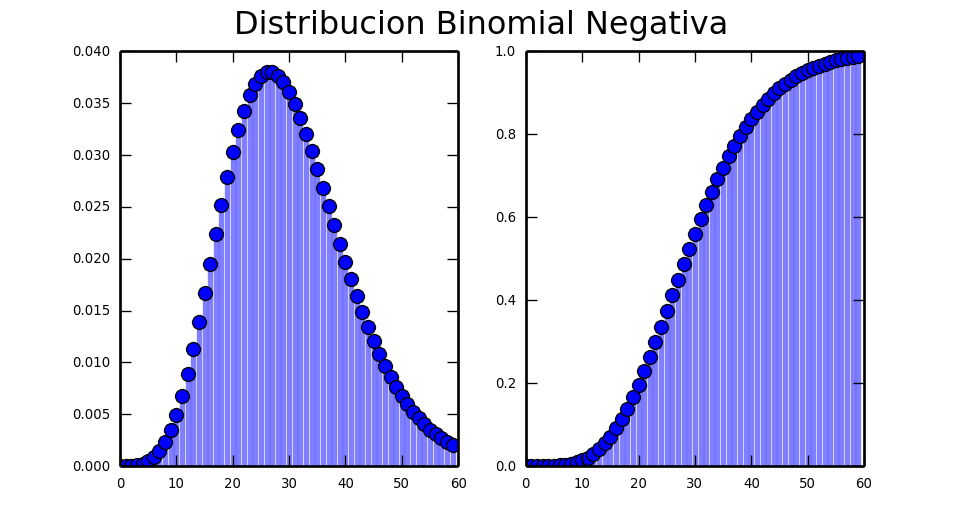
3.4.35 Ejercicio: Acceso aleatorio a un sistema con triple clave.
Sistema con tres claves de acceso
Supongamos que tenemos un sistema informático tiene un programa de seguridad que genera accesos con claves de 3 dígitos \(000,001,\ldots 999\). En total 1000 posibilidades.
Como una clave de tres dígitos es fácil de romper proponemos poner tres claves consecutivas de acceso al sistema cada una de 3 dígitos.
Para acceder al sistema hay que dar las tres claves de forma consecutiva y por orden.
Es decir hasta que no averiguamos la primera clave no pasamos a la segunda clave.
Supongamos que cada vez que ponemos los dos dígitos olvidamos el resultado y seguimos poniendo dígitos al azar hasta adivinar la contraseña.
Así hasta conseguir entrar en el sistema.
Sea \(X\) la v.a que nos da el número de fallos antes de entrar en el sistema.
3.4.36 Ejercicio acceso aleatorio a un sistema con triple clave.
Estamos interesados en modelar este problema. La preguntas son:
- ¿Cuál es la distribución de probabilidad de \(X\) la v.a que nos da el número de fallos antes de acceder al sistema.
- ¿Cuál es la función de probabilidad y de distribución del \(X\)
- ¿Cuál es la probabilidad de fallar 150 veces antes de acceder en el sistema?
- ¿Cuál es la probabilidad de fallar más de 150 veces antes de entrar en el sistema?
- ¿Cuál es el número esperado de fallos antes de acceder al sistema? ¿Y su desviación típica?
3.4.37 Ejemplo \(BN(r,p)\)
Solución 1. ¿Cuál es la distribución de probabilidad de \(X\) la v.a que nos da el número de fallos antes de acceder al sistema.
Bajo estados condiciones tenemos que la probabilidad de “éxito” de cada intento es \(p=\frac{1}{1000}=0.001\). Y como cada vez olvidamos en los dígitos cada intento será independiente del anterior.
Así que la variable \(X\) cuenta el número de fracasos independientes hasta conseguir 3 éxitos en un experimento \(Ber(p=0.001)\) por lo tanto \(X\) sigue un distribución \(BN(n=3,p=0.001).\)
3.4.38 Ejemplo \(BN(r,p)\)
Solución 2. ¿Cuál es la función de probabilidad y de distribución del \(X\)
En general la función de probabilidad de una \(BN(n,p)\) es
\[ P_X(X=x)=P(X=x)= \left\{ \begin{array}{cc} {x+n-1\choose n-1} \cdot (1-p)^{x}\cdot p^n & \mbox{si } x=0,1,\ldots \\ 0 & \mbox{en otro caso.}\end{array}\right. \] En particular la función de probabilidad de una \(BN(n=3,p=0.001)\) es
\[ P_X(X=x)=P(X=x)= \left\{ \begin{array}{cc} {x+2\choose 2} \cdot 0.999^{x}\cdot 0.001^3 & \mbox{si } x=0,1,2,\ldots \\ 0 & \mbox{en otro caso.}\end{array}\right. \]
3.4.39 Solución ejemplo \(BN(n=3,p=0.001)\)
Solución 3. ¿Cuál es la probabilidad de fallar 150 veces antes de acceder en el sistema?
Nos piden
\[ P(X=150)= {152\choose 2} \cdot 0.999^{150}\cdot 0.001^3 \]
Lo calcularemos operando con R
## [1] 9.876743e-06con la función de R
## [1] 9.876743e-063.4.40 Solución ejemplo \(BN(n=3,p=0.001)\)
Solución 3. ¿Cuál es la probabilidad de fallar 150 veces antes de acceder en el sistema?
Nos piden
\[ P(X=150)= {152\choose 2} \cdot 0.999^{150}\cdot 0.001^3 \]
Pero también lo podemos hacer con python
## 9.8767434596705257e-06## 9.8767434596702174e-063.4.41 Solución ejemplo \(BN(n,p)\)
Solución 4. ¿Cuál es la probabilidad de fallar más de 150 veces antes de entrar en el sistema?
\[P(X>150)=1-P(X\leq 150)\]
Calculemos \(P(X\leq 150)\)
\[ \begin{eqnarray*} P(X\leq 150) &=& P(X=0)+P(X=1)+P(X=2)+\ldots+P(X=150)= \sum_{k=0}^{150} {k+3-1\choose 3-1} \cdot (0.999)^{k}\cdot 0.001^3\\ &=& \ldots = 5.2320035\times 10^{-4} \end{eqnarray*} \]
## [1] 0.0005232003## 0.000523200349082405923.4.42 Solución ejemplo \(BN(n,p)\)
Solución 5. ¿Cuál es el número esperado de fallos antes de acceder al sistema? ¿Y su desviación típica?
\[E(X)=n\cdot \frac{1-p}{p}=3\cdot \frac{1- 0.001}{0.001}=2997.\] \[Var(X)=n\cdot \frac{1-p}{p^2}=3\cdot \frac{1- 0.001^2}{0.001^2}=2.997\times 10^{6}.\]
Con python
## E(X) = 2997.0## Var(X) = 2997000.03.4.43 ¿Tres claves de tres dígitos o una de 9 dígitos?
Ejercicio
Supongamos que ponemos una sola clave de 9 dígitos. Estudiemos en este caso la variable aleatoria que da el número de fallos antes de entrar en el sistema y comparemos los resultados.
Si seguimos suponiendo que cada vez ponemos la contraseña al azar pero esta vez con una clave de 9 dígitos. La probabilidad de éxito será ahora \(p=\frac{1}{10^{9}}\).
Si llamamos \(X_9\) a la variable aleatoria que nos da el número de fallos antes de entra en el sistema seguirá una distribución \(Ge(p=\frac{1}{10^9}=0.000000001)\).
3.4.44 Qué da más seguridad ¿tres claves de tres dígitos o una de 9 dígitos?
Su valor esperado es
\[ E(X_9)=\frac{1-p}{p}=\frac{1-0.000000001}{0.000000001}=10\times 10^{8}. \]
\(1000 000 000\) son 1000 millones de fallos esperados hasta abrir la puerta.
Recordemos que con tres contraseñas de 3 dígitos el valor esperado de fallos es
\[3\cdot \frac{1-0.001}{0.001}=2997.\]
Por lo tanto es mejor una clave larga de 9 dígitos que tres cortas si escribimos las contraseñas al azar.
3.5 Distribución Poisson
Diremos que una v.a. discreta \(X\) con \(X(\Omega)=\mathbf{N}\) tiene distribución de Poisson con parámetro \(\lambda>0\), y lo denotaremos por \(Po(\lambda)\) si su función de probabilidad es:
\[ P_{X}(x)=P(X=x)= \left\{\begin{array}{ll} \frac{\lambda^x}{x!} e^{-\lambda}& \mbox{ si } x=0,1,\ldots\\ 0 & \mbox{en otro caso}\end{array}\right.. \]
Recordemos que el desarrollo en serie de Taylor de la exponencial es
\[ e^{\lambda}=\sum_{x=0}^{+\infty} \frac{\lambda^x}{x!}. \]
Teniendo en cuenta esto es fácil comprobar que todos los valores de la función de probabilidad suman 1.
Además recordemos que dado \(x\in\mathbb{R}-\{0\}\) se tiene que
\[ \lim_{n\to\infty} \left(1+\frac{x}{n}\right)^n=e^x. \]
3.5.1 Distribución Poisson
Así, por ejemplo, se tiene que
\[ \lim_{n\to\infty} \left(1-\frac{\lambda}{n}\right)^n=\lim_{n\to\infty} \left(1+\frac{-\lambda}{n}\right)^n=e^{-\lambda}. \]
3.5.2 La distribución Poisson como “límite” de una binomial.
La distribución Poisson (Siméon Denis Poisson) aparece en el conteo de determinados eventos que se producen en un intervalo de tiempo o en el espacio.
Supongamos que nuestra variable de interés es \(X\)= número de eventos en el intervalo de tiempo \((0,t]\).
Como por ejemplo el número de llamadas a un call center en una hora y que sabemos que se cumplen las siguientes condiciones:
3.5.3 La distribución Poisson como “límite” de una binomial.
- El número promedio de eventos en el intervalo \((0,t]\) es \(\lambda>0\).
- Es posible dividir el intervalo de tiempo en un
gran número de subintervalos (denotemos por \(n\) al número de intervalos) de forma que:
- La probabilidad de que se produzcan dos o más eventos en un subintervalo es despreciable.
- El número de ocurrencias de eventos en un intervalo es independiente del número de ocurrencias en otro intervalo.
- La probabilidad de que un evento ocurra en un subintervalo es \(p_n\cdot n=\lambda\) o lo que es lo mismo \(p_n=\frac{\lambda}{n}\)·
3.5.4 La distribución Poisson como “límite” de una binomial.
Bajo estas condiciones podemos considerar que el número de eventos en el intervalo \((0,t]\) será el número de “éxitos” en \(n\) repeticiones independientes de un proceso Bernoulli de parámetro \(p_n\)
Entonces si \(n\to\infty\) y \(p_n\cdot n\) se mantiene igual a \(\lambda\) resulta que la función de probabilidad de \(X\) se puede poner como
3.5.5 La distribución Poisson como “límite” de una binomial.
\[ \begin{eqnarray*} P(X_n=k)&=&\left(\begin{array}{c} n\\ k\end{array}\right) \cdot p_n^k\cdot (1-p_n)^{n-k} \\ &=& {n\choose k}\cdot \left(\frac{\lambda}{n}\right)^{k}\cdot \left(1-\frac{\lambda}{n}\right)^{n-k}\\ &=& \frac{\lambda^k}{k!}\cdot\frac{n!}{(n-k)!\cdot n^k}\cdot \left(1-\frac{\lambda}{n}\right)^{n}\cdot \left(1-\frac{\lambda}{n}\right)^{-k}=\ldots \end{eqnarray*} \]
3.5.6 La distribución Poisson como “límite” de una binomial.
Estamos interesados en calcular
\[ \displaystyle\lim_{n\to \infty} P(X_n=k) = \lim_{n\to \infty} \frac{\lambda^k}{k!}\cdot\frac{n!}{(n-k)!\cdot n^k} \cdot \left(1-\frac{\lambda}{n}\right)^{n}\cdot \left(1-\frac{\lambda}{n}\right)^{-k}. \]
Calculemos el límite de algunos de los factores de la expresión
\[ \displaystyle\lim_{n\to \infty}\frac{n!}{(n-k)!\cdot n^k}= \lim_{n\to \infty}\frac{n\cdot (n-1)\cdots (n-k-1)}{n^k} =\lim_{n\to \infty}\frac{n^{k}+\cdots}{n^k}=1. \]
3.5.7 La distribución Poisson como “límite” de una binomial.
\[ \lim_{n\to \infty} \left(1-\frac{\lambda}{n}\right)^{n}=e^{-\lambda} \]
Y también teniendo en cuanta que \(k\) es constante.
\[ \lim_{n\to \infty} \left(1-\frac{\lambda}{n}\right)^{-k}=\lim_{n\to \infty} 1^{-k}=\lim_{n\to \infty} 1=1. \]
3.5.8 La distribución Poisson como “límite” de una binomial.
Para acabar
\[ \displaystyle\lim_{n\to\infty} P(X_n=k)= \lim_{n\to\infty} \left(\begin{array}{c} n\\ k\end{array}\right) \cdot p_n^k \cdot (1-p_n)^{n-k}= \frac{\lambda^k}{k!}\cdot 1 \cdot e^{-\lambda}\cdot 1=\frac{\lambda^k}{k!}\cdot e^{-\lambda}. \]
Lo que confirma que límite de una serie de variables \(B(n,p_n=\frac{\lambda}{n})\) sigue una ley \(Po(\lambda)\).
3.5.9 Procesos de Poisson
Lo interesante de las variables Poisson es que podemos modificar (si el modelo lo permite) el intervalo de tiempo \((0,t]\) en el que contamos los eventos.
Claro que esto no tiene que poder ser así.
Pero en general si la variable es poisson en \((0,t]\) también lo será en cualquier subintervalo \((0,t']\) para todo \(t'\) tal que \(0<t'<t\).
Así que podremos definir una serie de variables \(X_t\) de distribución \(Po(\lambda\cdot t)\).
3.5.10 Procesos de Poisson
Consideremos un experimento Poisson con \(\lambda\) igual al promedio de eventos en una unidad de tiempo (u.t.).
Si \(t\) es una cantidad de tiempo en u.t., la v.a. \(X_{t}\)=numero de eventos en el intervalo \((0,t]\) es una \(Po(\lambda\cdot t)\).
El conjunto de variables \(\{X_t\}_{t>0}\) recibe el nombre de proceso de Poisson.
3.5.11 Resumen distribución Poisson \(X\equiv Po(\lambda)\)
| \(X\) Poisson | \(\lambda\) |
|---|---|
| \(D_X=\) | \(\{0,1,\ldots \}\) |
| \(P_X(x)=P(X=x)=\) | \(\left\{\begin{array}{ll} \frac{\lambda^x}{x!}e^{-\lambda} & \mbox{ si } x=0,1,\ldots\\ 0 & \mbox{ en otro caso.}\end{array}\right.\) |
| \(F_X(x)=P(X\leq X)=\) | \(\begin{array}{l}\left\{\begin{array}{ll} 0 & \mbox{si } x<0\\\displaystyle\sum_{i=0}^{k} P(X=i)= \displaystyle\sum_{i=0}^{k} \frac{\lambda^i}{i!}\cdot e^{-\lambda} & \mbox{si }\left\{\begin{array}{l}k\leq x< k+1\\k=0,1,2,\ldots\end{array}\right.\end{array}\right. \\\mbox{Calcular la suma o utilizar funciones de R o python.} \end{array}\) |
| \(E(X)=\lambda\) | \(Var(X)=\lambda\) |
3.5.12 Resumen proceso Poisson \(X_t\equiv Po(\lambda\cdot t)\)
| \(X_t\) \(Po(\lambda\cdot t)\) | \(\lambda\) promedio por u.t. |
|---|---|
| \(D_X=\) | \(\{0,1,\ldots \}\) |
| \(P_X(x)=P(X=x)=\) | \(\left\{\begin{array}{ll} \frac{(\lambda\cdot t)^x}{x!}e^{-\lambda\cdot t} & \mbox{ si } x=0,1,\ldots\\ 0 & \mbox{ en otro caso.}\end{array}\right.\) |
| \(F_X(x)=P(X\leq X)=\) | \(\begin{array}{l}\left\{\begin{array}{ll} 0 & \mbox{si } x<0\\\displaystyle\sum_{i=0}^{k} P(X=i)= \displaystyle\sum_{i=0}^{k} \frac{(\lambda\cdot t)^i}{i!}\cdot e^{-\lambda\cdot t} & \mbox{si }\left\{\begin{array}{l}k\leq x< k+1\\k=0,1,2,\ldots\end{array}\right.\end{array}\right. \\\mbox{Calcular la suma o utilizar funciones de R o python.} \end{array}\) |
| \(E(X)=\lambda\cdot t\) | \(Var(X)=\lambda\cdot t\) |
3.5.13 Aproximación de la distribución binomial por la Poisson
Bajo el punto de vista anterior y si \(p\) es pequeño y \(n\) suficientemente grande la distribución \(B(n,p)\) se aproxima a una \(Po(\lambda=n\cdot p)\).
Existen distintos criterios (ninguno perfecto) de cuando la aproximación es buena.
Por ejemplo si
\[n\geq 20\mbox{ o mejor }n\geq 30, n\cdot p < 10 \mbox{ y } p\leq 0.05,\]
la aproximación de una \(B(n,p)\) por una \(Po(n\cdot p)\) es buena. Sobre todo para los valores cercanos a \(E(X)=\lambda\).
3.5.14 Gráficos aproximación binomial Poisson
Condición deseable \(n\geq 20\), \(n\cdot p < 10\), \(p\leq 0.05\)
Para ejecutar el siguiente gráfico interactivo, solamente tienes que cargar el paquete shiny en tu ordenador y luego copiar/pegar las siguientes instrucciones. De este modo podrás observar los cambios en las distribuciones variando los parámetros.
fluidPage(
fluidRow(
column(6,
sliderInput("n_binomP", label = "Número de repeticiones n:",
min = 1, max = 100, value =20 , step = 1)),
column(6,
sliderInput("p_binomP", label = "Probabilidad éxito p:",
min = 0.001, max = 0.9, value = 0.05, step = 0.001)
)
)
)
renderPlot({
n=input$n_binomP
pr=input$p_binomP
par(mfrow=c(1,2))
aux=rep(0,(n+1)*2)
aux[seq(2,(n+1)*2,2)]=dbinom(c(0:n),size=n,prob=pr)
plot(x=c(0:n),y=dbinom(c(0:n),size=n,prob=pr),
ylim=c(0,0.6),xlim=c(-1,n+1),xlab="x",ylab="Función de probabilidad",
main=paste0(c("Funciones de probabilidad\n B(n=",n,",p=",pr,"), Po(lambda=",n*pr,")"),collapse = ""))
lines(x=rep(0:n,each=2),y=aux,pch=21, type = "h", lty = 2,col="blue")
aux=rep(0,(n+1)*2)
aux[seq(2,(n+1)*2,2)]=dpois(c(0:n),n*pr)
points(x=c(0:n),y=dpois(c(0:n),n*pr),
ylim=c(0,0.6),xlim=c(-1,n+1),xlab="x",pch=25,col="red")
lines(x=rep(0:n,each=2),y=aux, type = "h", lty = 3,col="red")
legend("topleft",legend=c("Binomial","Poisson"),col=c("blue","red"),pch=c(21,25),lty=c(2,3),bty = "n")
curve(pbinom(x,size=n,p=pr),
xlim=c(-1,n+1),col="blue",ylab="Función de Distribución",
main=paste0(c("Funciones de distribución \n B(n=",n,",p=",pr,"), Po(lambda=",n*pr,")"),collapse = ""))
curve(ppois(x,n*pr),
xlim=c(-1,n+1),col="red",add=TRUE)
if(all(c(n>=20,n*pr<10,pr<= 0.05))){aux_l="Condición\n TRUE"} else {aux_l="Condición\n FALSE"}
legend("topleft",legend=c(aux_l,paste0("n=",n),paste0("n*p=",n*pr),paste0("p=",pr)),bg="transparent",cex=0.8,bty = "n")
par(mfrow=c(1,1))
})3.5.15 Ejemplo \(Po(\lambda)\)
Ejemplo: Trampa insectos.
La conocida lámpara antiinsectos o insecticida eléctrico atrae a los insectos voladores con una luz ultravioleta y los mata por electrocución.
Consideremos la v.a. \(X\) que cuenta número de insectos caídos en la trampa en una hora. Supongamos que el número promedio de insectos que captura la trampa en una hora es \(E(X)=20\) y que podemos admitir que \(X\) sigue una ley de probabilidad \(Po(\lambda=20)\).
Nos piden
- Comentar de forma breve si se cumplen intuitivamente las condiciones para tener una distribución Poisson.
- Escribir de forma explicita la función de probabilidad y de distribución de \(X\).
- Calculad la probabilidad de que en una hora caigan en la trampa exactamente 21 insectos.
- Calculad la probabilidad de que en una hora caigan en la trampa al menos 6 insectos.
- ¿Cuál es el valor esperando, la varianza y la desviación típica de \(X\)?
3.5.16 Ejemplo \(Po(\lambda)\)
Solución 1. Comentar de forma breve si se cumplen intuitivamente las condiciones para tener una distribución Poisson.
- El número promedio de eventos en el intervalo \((0,1]\), una hora es \(\lambda=20>0\).
- Es posible dividir el intervalo de tiempo de una hora en un
gran número de subintervalos (denotemos por \(n\) al número de intervalos) de forma que:
- La probabilidad de que se produzcan dos o más electrocuciones un subintervalo es despreciable. No es posible que dos mosquitos se electrocuten al mismo tiempo.
- El número de ocurrencias, electrocuciones de insectos, en un intervalo es independiente del número de electrocuciones en otro intervalo.
- La probabilidad de que un evento ocurra en un subintervalo es \(p_n\cdot n=\lambda\) o lo que es lo mismo \(p_n=\frac{\lambda}{n}\)· Podemos dividir los 20 insectos promedio entre los \(n\) intervalos (trozo de hora) de forma que \(p_n=\frac{\lambda}{n}\).
- Por ejemplo si \(n=60\) tenemos que \(p_n=\frac{20}{60}=\frac{1}{3}\). La probabilidad de que en un minuto la trampa chisporrotee es \(\frac{1}{3}\).
3.5.17 Ejemplo \(Po(\lambda)\)
Solución 2. Escribid de forma explicita la función de probabilidad y de distribución de \(X\).
La distribución de probabilidad de un \(Po(\lambda)\) es
\[ P_X(x)=P(X=x)=\left\{\begin{array}{ll} \frac{\lambda^x}{x!}e^{-\lambda} & \mbox{ si } x=0,1,\ldots\\ 0 & \mbox{ en otro caso.}\end{array}\right. \]
Para un a \(Po(\lambda=20)\)
\[ P_X(x)=P(X=x)=\left\{\begin{array}{ll}\frac{20^x}{x!}e^{-20} & \mbox{ si } x=0,1,\ldots\\ 0 & \mbox{ en otro caso.}\end{array}\right. \]
3.5.18 Ejemplo \(Po(\lambda)\)
La función de distribución es
\[ F_X(x)=P(X\leq X)= \left\{\begin{array}{ll} 0 & \mbox{si } x<0\\ \displaystyle\sum_{i=0}^{k} P(X=i)=\sum_{i=0}^{k}\frac{\lambda^i}{i!}\cdot e^{-\lambda} & \mbox{si } \left\{\begin{array}{l} k\leq x< k+1\\k=0,1,2,\ldots \end{array} \right. \end{array} \right. \]
En nuestro caso \[ F_X(x)=P(X\leq X)= \left\{\begin{array}{ll} 0 & \mbox{si } x<0\\ \displaystyle\sum_{i=0}^{k} P(X=i)=\sum_{i=0}^{k}\frac{20^i}{i!}\cdot e^{-20} & \mbox{si } \left\{\begin{array}{l} k\leq x< k+1\\k=0,1,2,\ldots \end{array} \right. \end{array} \right. \]
3.5.19 Ejemplo \(Po(\lambda)\)
Solución 3. Calculad la probabilidad de que en una hora caigan en la trampa exactamente 21 insectos.
Nos piden
\[ P(X=21)=\frac{20^{21}}{21!}=0.0846051. \]
Con R como calculadora y con la función de la distribución de R
## [1] 0.08460506## [1] 0.084605063.5.20 Ejemplo \(Po(\lambda)\)
Solución 4. Calculad la probabilidad de que en una hora caigan en la trampa al menos 6 insectos.
Nos piden \[ \begin{eqnarray*} P(X\geq 6)&=&1- P(X<6)=1-P(X\leq 5)=1-F_X(5)=1-\displaystyle\sum_{x=0}^{5} \frac{20^{x}}{x!}\cdot e^{-20}\\ &=& 1-\left(\frac{20^{0}}{0!}\cdot e^{-20}+\frac{20^{1}}{1!}\cdot e^{-20}+\frac{20^{2}}{2!}\cdot e^{-20}+\frac{20^{3}}{3!}\cdot e^{-20}+\frac{20^{4}}{4!}\cdot e^{-20}+\frac{20^{5}}{5!}\cdot e^{-20}\right)\\ &=& 1-e^{-20}\cdot \left(1+20+\frac{400}{4}+\frac{8000}{6}+\frac{160000}{24}+\frac{3200000}{120}\right)\\ &=& 1-e^{-20} \cdot \left(\frac{1 \cdot 120+20\cdot 120+400\cdot 30+8000\cdot 20+160000\cdot 24+3200000\cdot 1}{120}\right)\\ &=& 1-e^{-20}\cdot\left(\frac{4186520}{120}\right)=1-0.0066126. \end{eqnarray*} \]
3.5.21 Ejemplo \(Po(\lambda)\)
Solución 5. ¿Cuál es el valor esperado, la varianza y la desviación típica de \(X\)?
El valor esperado del número de insectos caídos en la trampa en una hora es
\[E(X)=\lambda=20\]
Su varianza es \[Var(X)=\lambda=20\]
y su desviación típica vale \[\sqrt{Var(X)}=+\sqrt{\lambda}=+\sqrt{20}.\]
3.5.22 Cálculos con R
Sea \(X\) un una v.a. \(Po(\lambda=3)\). Entonces \(P_X(0)=P(X=0), P_X(1)=P(X=1)\):
## [1] 0.04978707## [1] 0.14936123.5.23 Cálculos con R
\(F_X(0)=P(X\leq 0), F_X(1)=P(X\leq 1)\):
## [1] 0.04978707## [1] 0.1991483## [1] 0.19914833.5.24 Cálculos con R
Por ejemplo podemos comprobar que \(F_X(10)=\sum_{x=0}^{10} P_X(x)\)
## [1] 0.0497870684 0.1493612051 0.2240418077 0.2240418077 0.1680313557
## [6] 0.1008188134 0.0504094067 0.0216040315 0.0081015118 0.0027005039
## [11] 0.0008101512## [1] 0.9997077## [1] 0.99970773.5.25 Cálculos distribución Poisson con R
Y también generar secuencias de observaciones aleatorias de una población \(Po(3)\)
## [1] 2 5 3 3 2 2 5 2 4 4 2 3 2 2 2 2 2 3 3 5 3 3 2 4 2 3 2 1 1 3 4 6 2 5 3 4 1
## [38] 1 6 3 4 1 4 3 4 3 0 2 1 4 3 0 2 4 2 3 5 2 1 3 3 4 2 5 0 3 1 1 4 6 4 5 0 4
## [75] 0 3 3 3 4 1 2 6 2 2 2 2 1 2 5 2 5 3 7 3 5 2 3 2 1 33.5.26 Cálculos con R
En el ejercicio de la trampa para insectos teníamos que \(X\) es una \(Po(20)\). Responded con R a la preguntas 3 y 4 de este ejercicio
Pregunta 3. Calculad la probabilidad de que en una hora caigan en la trampa exactamente 21 insectos.
La respuesta a la pregunta 3 es calcular \(P(X=21)\)
## [1] 0.084605063.5.27 Cálculos con R
Pregunta 4. Calculad la probabilidad de que en una hora caigan en la trampa al menos 6 insectos.
La pregunta 4 nos pide calcular \(P(X\geq 6)=1-P(X<6)=1-P(X\leq 5)\)
## [1] 7.190884e-05## [1] 0.9999281## [1] 0.99992813.5.28 Gráficos de la distribución Poisson con R
lambda=20
par(mfrow=c(1,2))
n=qpois(0.99,lambda=lambda)
aux=rep(0,(n+1)*2)
aux[seq(2,(n+1)*2,2)]=dpois(c(0:n),lambda=lambda)
ymax=max(ppois(0:n,lambda=lambda))
plot(x=c(0:n),y=dpois(c(0:n),lambda=lambda),
ylim=c(0,ymax),xlim=c(-1,n+1),xlab="x",ylab="Función de probabilidad",
main=paste0(c("Función de probabilidad\n Po(lambda=",lambda,")"),collapse = ""))
lines(x=rep(0:n,each=2),y=aux,pch=21, type = "h", lty = 2,col="blue")
curve(ppois(x,lambda=lambda),
xlim=c(-1,n+1),col="blue",ylab="Función de Distribución",
main=paste0(c("Función de distribución \n Po(lambda=",lambda,")"),collapse = ""))
par(mfrow=c(1,1))3.5.29 Gráficos de la distribución Poisson con R

3.5.30 Gráficos interactivos con R
Para ejecutar el siguiente gráfico interactivo, solamente tienes que cargar el paquete shiny en tu ordenador y luego copiar/pegar las siguientes instrucciones. De este modo podrás observar los cambios en las distribuciones variando los parámetros.
sliderInput("lambda", label = "Promedio de eventos lambda",
min = 1, max = 100, value =20 , step = 1)
renderPlot({
lambda=input$lambda
par(mfrow=c(1,2))
n=qpois(0.99,lambda=lambda)
#n
aux=rep(0,(n+1)*2)
aux[seq(2,(n+1)*2,2)]=dpois(c(0:n),lambda=lambda)
ymax=0.45
plot(x=c(0:n),y=dpois(c(0:n),lambda=lambda),
ylim=c(0,ymax),xlim=c(-1,n+1),xlab="x",ylab="Función de probabilidad",
main=paste0(c("Función de probabilidad\n Po(lambda=",lambda,")"),collapse = ""))
lines(x=rep(0:n,each=2),y=aux,pch=21, type = "h", lty = 2,col="blue")
curve(ppois(x,lambda=lambda),
xlim=c(-1,n+1),col="blue",ylab="Función de Distribución",
main=paste0(c("Función de distribución \n Po(lambda=",lambda,")"),collapse = ""))
par(mfrow=c(1,1))
})3.5.31 Cálculos con python
Sea \(X\) un una v.a. \(Po(\lambda=3)\). Entonces
\(P_X(0)=P(X=0), P_X(1)=P(X=1)\) en este orden son
## 0.049787068367863944## 0.149361205103591853.5.32 Cálculos con python
Sea \(X\) un una v.a. \(Po(\lambda=3)\). Entonces
\(F_X(0)=P(X\leq 0), F_X(1)=P(X\leq 1)\) en este orden son
## 0.049787068367863951## 0.19914827347145581## 0.199148273471455813.5.33 Cálculos con python
Por ejemplo podemos comprobar que \(F_X(10)=\displaystyle\sum_{0}^{10} P_X(x)\)
## [0, 1, 2, 3, 4, 5, 6, 7, 8, 9]## array([ 0.04978707, 0.14936121, 0.22404181, 0.22404181, 0.16803136,
## 0.10081881, 0.05040941, 0.02160403, 0.00810151, 0.0027005 ])## 0.99889751186988462## 0.999707663049352663.5.34 Cálculos con python
En el ejercicio de la trampa para insectos teníamos que \(X\) es una \(Po(20)\). Responded con python a la preguntas 3 y 4 de este ejercicio
Pregunta 3. Calculad la probabilidad de que en una hora caigan en la trampa exactamente 21 insectos.
La respuesta a la pregunta 3 es calcular \(P(X=21)\)
## 0.0846050641829379093.5.35 Cálculos con R
Pregunta 4. Calculad la probabilidad de que en una hora caigan en la trampa al menos 6 insectos.
La pregunta 4 nos pide calcular \(P(X\geq 6)=1-P(X\leq 5)\)
## 0.999928091159471573.5.36 Cálculos con python
Como ya hemos visto con scipy.stats podemos pedir los momentos de una variable aleatoria
\(Po(3)\)
## (array(3.0), array(3.0))Y también generar secuencias de observaciones aleatorias de una población \(Po(3)\)
## array([1, 1, 2, 3, 2, 5, 6, 3, 4, 1, 1, 4, 4, 2, 1, 4, 2, 3, 3, 1, 1, 3, 2,
## 4, 1, 4, 3, 4, 6, 3, 5, 4, 7, 2, 3, 4, 2, 5, 1, 1])3.5.37 Gráficos con python
from scipy.stats import poisson
mu = 10 ## mu = lambda
x = np.arange(poisson.ppf(0.01, mu),poisson.ppf(0.99, mu))
fig =plt.figure(figsize=(5, 2.7))
ax = fig.add_subplot(1,2,1)
ax.plot(x, poisson.pmf(x, mu), 'bo', ms=5, label='poisson pmf')
ax.vlines(x, 0, poisson.pmf(x, mu), colors='b', lw=2, alpha=0.5)
for tick in ax.xaxis.get_major_ticks():
tick.label.set_fontsize(5)
for tick in ax.yaxis.get_major_ticks():
tick.label.set_fontsize(5)
ax = fig.add_subplot(1,2,2)
ax.plot(x, poisson.cdf(x, mu), 'bo', ms=5, label='poisson cdf')
ax.vlines(x, 0, poisson.cdf(x, mu), colors='b', lw=2, alpha=0.5)
for tick in ax.xaxis.get_major_ticks():
tick.label.set_fontsize(5)
for tick in ax.yaxis.get_major_ticks():
tick.label.set_fontsize(5)
fig.suptitle('Distribucion de Poisson')
plt.show()3.5.38 Gráficos con python
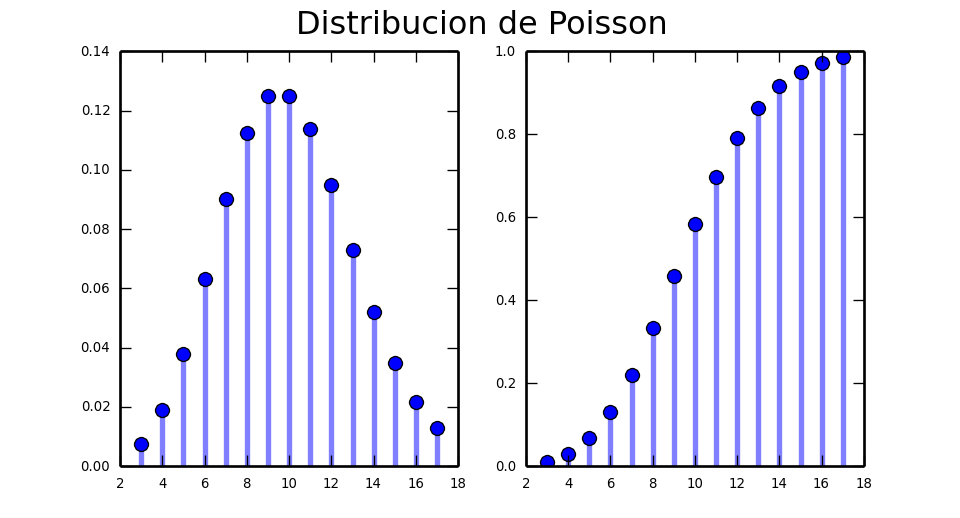
3.5.39 Gráficos interactivos proceso \(Po(\lambda\cdot t\))
Para ejecutar el siguiente gráfico interactivo, solamente tienes que cargar el paquete shiny en tu ordenador y luego copiar/pegar las siguientes instrucciones. De este modo podrás observar los cambios en las distribuciones variando los parámetros.
fluidPage(
fluidRow(
column(6,
sliderInput("lambdapp", label="Promedio eventos por unidad de tiempo", min = 0.1, max = 50, value =10 , step = 0.01)),
column(6,sliderInput("t", label = "Intervalo de tiempo (0,t]", min = 1, max = 120, value =1 , step = 0.5))
)
)
renderPlot({
lambda1=input$lambdapp
t=input$t
lambda=lambda1*t ## es lambda* t
par(mfrow=c(1,2))
n=qpois(0.99,lambda=lambda)
#n
aux=rep(0,(n+1)*2)
aux[seq(2,(n+1)*2,2)]=dpois(c(0:n),lambda=lambda)
ymax=ppois(which.max(ppois(0:n,lambda))-1,lambda)*0.7
plot(x=c(0:n),y=dpois(c(0:n),lambda=lambda),
ylim=c(0,ymax),xlim=c(-1,n+1),xlab="x",ylab="Función de probabilidad",
main=paste0(c("Función de probabilidad\n Po(lambda=",lambda,")"),collapse = ""))
lines(x=rep(0:n,each=2),y=aux,pch=21, type = "h", lty = 2,col="blue")
curve(ppois(x,lambda=lambda),
xlim=c(-1,n+1),col="blue",ylab="Función de Distribución",
main=paste0(c("Función de distribución \n Po(lambda=",lambda,")"),collapse = ""))
par(mfrow=c(1,1))
}){kind=link}
3.5.40 Ejemplo proceso Poisson
Número de impactos de insectos en la visera de un casco
Un colega de trabajo, al que llamaremos JG, es muy aficionado a los grandes premios de velocidad tanto en coches como en motos.
Como es tan aficionado está obsesionado con muchas de las más extravagantes estadísticas de estos deportes. En particular le propusimos que estudiara el número de insectos que chocan contra la visera de un casco de un motorista GP o de un conductor o de fórmula 1 .
La idea es que el número de insectos está igualmente repartido por todo el circuito y de de promedio impactan \(\lambda>0\) insectos por minuto. También es razonable suponer que:
- podemos dividir la superficie de la visera en cuadrados suficiente mente pequeños de forma que la probabilidad de que caigan dos insectos en la misma zona es prácticamente 0.
- un insecto impacte en un cuadrado cualquier de la visera es independiente de cualquier otro cuadrado.
- si hemos dividido la visera en \(n\) cuadrados la probabilidad \(p_n\) de impacto de un cuadrado \(p_n=\frac{\lambda}{n}\)
Así que bajo estas condiciones si denotamos por \(X_t=\) el número de insectos que ha impactado en la visera en el intervalo \((0,t]\) (en \(t\) minutos) podemos afirmar que \(X_t\) es un proceso poisson \(Po(\lambda\cdot t)\).
3.5.41 Ejemplo proceso Poisson
Supongamos que nos dicen que \(\lambda=3\) insectos por minuto. Entonces el proceso de poisson \(X_t\) seguirá un ley \(Po(3\cdot t).\)
Ahora estamos en condiciones de preguntar al proceso de Poisson.
¿Cuál es la probabilidad de que en 10 minutos impacten más de 25 insectos?
En este caso \(t=10\) \(X_{10}\)= número de insectos que impactan en 10 minutos, el intervalo \([0,10)\) que sigue una \(P(3\cdot 10=30)\). Por lo tanto
\[P(X>25)=1-P(X\leq 25)\]
lo resolvemos con R
## [1] 13.5.42 Ejemplo proceso Poisson
Otra pregunta interesante es que tengamos que esperar más de 2 minutos para observar el primer impacto
\[P(X_2=0)=\frac{(3\cdot 2)^0}{0!}\cdot e^{-3\cdot 2}= e^{-6}=0.002479.\]
Con R
## [1] 0.002478752## [1] 0.0024787523.6 Distribución hipergeométrica
Supongamos que disponemos de una urna de de sorteos que contiene \(m\) bolas blancas y \(n\) bolas de otro color, digamos que rojas.
En total en esta urna hay \(m+n\) bolas \(m\) blancas y \(n\) rojas. Si extraemos dos bolas de la urna lo podemos hacer de dos formas:
- Extraer una anotar su color y reponerla. Sacar otra y anotar su color. Hemos extraído la bola con reposición.
- Extraer simultáneamente dos bolas (sin reposición) y contar el número de bolas blancas.
Si \(X\) es la v.a. que cuenta el número de bolas blancas extraídas
- en el primer caso \(X\) es una \(B(n=2,p=\frac{m}{m+n})\) ya que consiste en repetir dos veces el mismo experimento bernoulli.
- en el segundo caso \(X\) sigue una distribución hipergeométrica que estudiaremos en esta sección.
Sean \(n\), \(m\) y \(k\) tres número enteros positivos y tales que \(k<m+n\).
Consideremos una urna que contiene \(m+n\) bolas de las que \(m\) son blancas y las restantes \(n\) no (son no blancas).
El número total de bolas es \(m+n\). Extraemos de forma aleatoria \(k\) bolas de la urna sin reemplazarlas.
Si \(X\) la v.a. que cuenta el número de bolas blancas extraídas.
Su dominio es
\[D_X=\left\{x\in\mathbf{N}\mid \max\{0,k-n\}\leq x \leq \min\{m,k\}\right\}\]
Para explicarlo veamos varios supuestos
- \(H(m=5,n=2,k=3)\). Tenemos \(m=5\) bolas blancas \(n=2\) no blancas y saco \(k=3\) bolas sin reposición.
- En este caso el mínimo de bolas blancas es \(1=k-n=3-2\); ya que solo hay dos no blancas.
- Mientras que el máximo si es \(k=3\); ya que tenemos más que suficientes bolas blancas.
\[D_X=\left\{x\in\mathbf{N}\mid \max\{0,k-n\}\leq x \leq \min\{m,k\}\right\}\]
- \(H(m=2,n=5,k=3)\). Tenemos \(m=2\) bolas blancas, \(n=5\) no blancas y saco \(k=3\) bolas sin reposición.
- En este caso el mínimo de bolas blancas es \(0\); puedo sacar 3 no blancas
- Mientras que el máximo si es \(m=2\); ya que aunque saquemos \(k=3\) al llegar a 2 ya hemos extraído todas las bolas blancas de la urna.
- \(H(m=10,n=10,k=3)\). Tenemos \(m=10\) bolas blancas, \(n=10\) no blancas y saco \(k=3\) bolas sin reposición.
- En este caso podemos obtener desde \(0\) blancas hasta \(k=3\) blancas.
Su función de probabilidad es:
\[ P_{X}(x)=\left\{ \begin{array}{ll} \frac{\binom{m}{x}\cdot \binom{n}{k-x}}{\binom{m+n}{k}} & \mbox{ si } \max\{0,k-n\}\leq x \leq \min\{m,k\} \mbox { para } x\in \mathbf{N}\\ 0 & \mbox{en otro caso}\end{array}\right. \]
3.6.1 Distribución hipergeométrica
Una v.a. hipergeométrica con los parámetros anteriores la denotaremos por \[H(m,n,k).\]
En ocasiones se parametriza una v.a. hipergeométrica mediante \(N=m+n\) número total de bolas, \(k\)=número de extracciones y \(p=\) probabilidad de una bola blanca.
Así podemos parametrizar alternativamente la distribución hipergeométrica así
\[H(N,k,p)\mbox{ donde } p=\frac{m}{N}.\]
3.6.2 Resumen hipergeométrica \(H(m,n,k)\).
| \(X=\)número de bolas blancas en \(k\) extracciones sin reposición de una urna con \(m\) bolas blancas y \(n\) negras. | \(H(m,n,k)\) |
|---|---|
| \(D_X\)= | \(\left\{x\in\mathbf{N}\mid \max\{0,k-n\}\leq x \leq \min\{m,k\}\right\}\) |
| \(P_X(x)=P(X=x)=\) | \(\left\{ \begin{array}{ll} \frac{\binom{m}{x}\cdot \binom{n}{k-x}}{\binom{m+n}{k}} & \mbox{ si } \max\{0,k-n\}\leq x \leq \min\{m,k\} \mbox { para } x\in \mathbf{N}\\ 0 & \mbox{en otro caso}\end{array}\right.\) |
| \(F_X(x)=P(X\leq x)\) | Hay que sumarla. Utilizad funciones de R o de python. |
| \(E(X)=\frac{k\cdot m}{m+n}\) | \(Var(X)=k\cdot\frac{m}{m+n}\cdot\left(1-\frac{m}{m+n}\right) \cdot\frac{m+n-k}{m+n-1}\) |
3.6.3 Ejemplo clásico urna \(m=15\) blancas, \(n=10\) rojas y \(k=3\) extracciones sin reposición.
Urna con bolas blancas y rojas
Tenemos una urna con 10 bolas rojas, 15 bolas blancas. Extraemos al azar tres bolas de la urna sin reposición. Sea \(X\)=número de bolas blancas extraídas. Bajo esta condiciones la v.a. \(X\) sigue una ley de distribución \(H(m=15,n=10,k=3)\).
La función de probabilidad es
\[ P_X(x)=P(X=x)=\left\{ \begin{array}{ll} \frac{\binom{m}{x}\cdot \binom{n}{k-x}}{\binom{m+n}{k}} & \mbox{ si } \max\{0,k-n\}\leq x \leq \min\{m,k\} \mbox { para } x\in \mathbf{N}\\ 0 & \mbox{en otro caso}\end{array}\right. \]
Sustituyendo los parámetros obtenemos
\[ P_X(x)=P(X=x)=\left\{ \begin{array}{ll} \frac{\binom{15}{x}\cdot \binom{10}{3-x}}{\binom{25}{3}} & \mbox{ si } 0\leq x \leq 3 \mbox { para } x\in \mathbf{N}\\ 0 & \mbox{en otro caso}\end{array}\right. \]
3.6.4 Ejemplo clásico urna \(m=15\) blancas, \(n=10\) rojas y \(k=3\) extracciones sin reposición.
La probabilidad de sacar 2 blancas será
\[ P(X=2)=\frac{\binom{15}{2}\cdot \binom{10}{3-2}}{\binom{25}{3}} \]
## [1] 105 10 2300\(P(X=2)=\frac{105\cdot10 }{2300}=0.4565217.\)
3.6.5 Ejemplo clásico urna \(m=15\) blancas, \(n=10\) rojas y \(k=3\) extracciones sin reposición.
La probabilidad de que saquemos más de 1 bola blanca es
\[ \begin{eqnarray*} P(X> 1)&=& 1-P(X\leq 1)=1-(P(X=0)+P(X=1))\\ &=& 1-\left(\frac{\binom{15}{0}\cdot \binom{10}{3}}{\binom{25}{3}}+ \frac{\binom{15}{1}\cdot \binom{10}{2}}{\binom{25}{3}}\right)\\ &=& 1-\left( \frac{1\cdot120 }{2300}+\frac{15\cdot45 }{2300} \right)=1-\frac{120+15\cdot 45}{2300}=0.6543478 \end{eqnarray*} \]
3.6.6 Ejemplo clásico urna \(m=15\) blancas, \(n=10\) rojas y \(k=3\) extracciones sin reposición.
El número esperado de bolas blancas extraídas para una v.a. \(X\) \(H(m=15,n=10,k=3)\) es
\[E(X)=\frac{k\cdot m}{m+n}=\frac{3\cdot 15}{15+10}=\frac{45}{35}=1.285714.\]
\[ \begin{eqnarray*} Var(X)&=&k\cdot\frac{m}{m+n}\cdot\left(1-\frac{m}{m+n}\right) \cdot\frac{m+n-k}{m+n-1}\\ &=&3\cdot\frac{15}{15+10}\cdot\left(1-\frac{15}{15+10}\right) \cdot\frac{15+10-3}{15+10-1}\\ &=& 3\cdot\frac{15}{25}\cdot\left(1-\frac{15}{25}\right) \cdot\frac{22}{24}= 3\cdot\frac{15}{25}\cdot\frac{25-15}{25} \cdot\frac{22}{24}\\ &=& 3\cdot\frac{15}{25}\cdot\frac{10}{25}\cdot\frac{22}{24}=0.66. \end{eqnarray*} \]
Y por lo tanto su desviación típica es
\[ +\sqrt{Var(X)}=+\sqrt{0.66}=0.812404. \]
3.6.7 Cálculos con R
Sea \(X\) una va.a \(H(m,n,k)\) Las funciones de R son \(P(X=x)=\)dhyper(x,m,n,k) y \(P(X\leq q)=\)phyper(q,m,n,k), la generación de aleatorios de una hipergeométrica es rhyper(nn,m,n,k) donde nn es el número de observaciones aleatorias deseado.
Si \(X\) es una \(H(m=15,n=10,k=3)\), \(P(X=2)\) y que \(P(X>1)=1-P(X\leq 1)\) son…
3.6.8 Cálculos con R
## [1] 0.4565217## [1] 0.3456522## [1] 0.65434783.6.9 Cálculos con R
Una muestra aleatoria de este experimento de tamaño 200 sería…
## [1] 2 3 1 3 1 2 2 3 2 2 1 2 1 2 2 3 3 1 1 1 1 0 2 3 2 1 3 2 2 2 2 3 2 3 3 2 0
## [38] 1 2 1 3 2 2 3 2 3 2 2 3 2 3 1 2 2 2 2 3 2 2 1 3 2 2 3 1 2 2 2 2 2 3 0 2 0
## [75] 3 2 2 2 1 2 2 3 1 1 1 2 2 2 2 1 1 3 2 2 3 2 2 1 1 1 3 3 2 2 2 1 3 2 2 2 1
## [112] 1 2 3 2 2 1 2 2 2 2 2 2 3 1 2 3 3 1 1 2 2 1 1 3 2 1 1 2 2 3 1 1 1 2 1 1 3
## [149] 1 2 2 3 3 2 3 1 2 1 2 2 2 1 2 3 1 3 3 3 2 2 1 3 3 1 1 2 2 2 2 2 3 2 1 2 1
## [186] 1 1 1 2 1 1 2 2 2 2 3 3 1 0 23.6.10 Gráficas con R
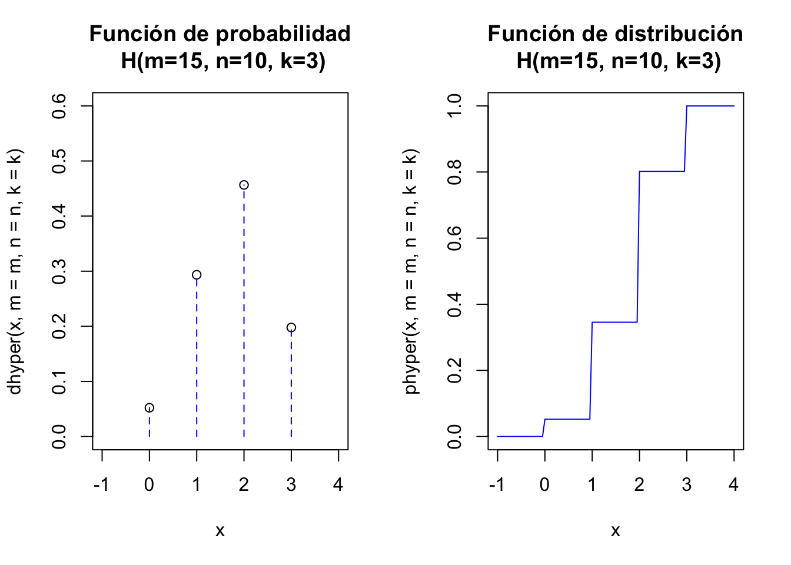
3.6.11 Gráficos interactivos \(H(m,n,k)\)
Para ejecutar el siguiente gráfico interactivo, solamente tienes que cargar el paquete shiny en tu ordenador y luego copiar/pegar las siguientes instrucciones. De este modo podrás observar los cambios en las distribuciones variando los parámetros.
fluidPage(
fluidRow(
column(4,
sliderInput("mh", label = "Número de bolas blancas m",
min = 1, max = 50, value =15, step = 1)),
column(4,
sliderInput("nh", label = "Número de bolas rojas n",
min = 1, max = 50, value =10 , step = 1)),
column(4,
sliderInput("kh", label = "Número bolas extraídas k",
min = 1, max=25, value = 3, step = 1)
)
)
)
renderPlot({
m=input$mh
n=input$nh
k=input$kh
#n=10
#k=3
#m=15
par(mfrow=c(1,2))
a=max(c(0,k-n))
b=min(c(m,k))
l=b-a+1
aux=rep(0,times=2*l)
aux[seq(2,2*l,2)]=dhyper(c(a:b),m=m,n=n,k=k)
x=a:b
plot(x,y=dhyper(x,m=m,n=n,k=k),
ylim=c(0,0.6),xlim=c(a-1,b+1),xlab="x",
main=paste0("Función de probabilidad\n H(m=",m,", n=",n,", k=",k,")"))
lines(x=rep(a:b,each=2),y=aux, type = "h", lty = 2,col="blue")
curve(phyper(x,m=m,n=n,k=k),
xlim=c(a-1,b+1),col="blue",
main=paste0("Función de distribución\n H(m=",m,", n=",n,", k=",k,")"))
par(mfrow=c(1,1))
})3.6.12 Comparación \(H(m,n,k)\) y \(B\left(k,\frac{m}{n+m}\right)\).
Para ejecutar el siguiente gráfico interactivo, solamente tienes que cargar el paquete shiny en tu ordenador y luego copiar/pegar las siguientes instrucciones. De este modo podrás observar los cambios en las distribuciones variando los parámetros.
fluidPage(
fluidRow(
column(4,
sliderInput("mh2", label = "Número de bolas blancas m",
min = 1, max = 50, value =15, step = 1)),
column(4,
sliderInput("nh2", label = "Número de bolas rojas n",
min = 1, max = 50, value =10 , step = 1)),
column(4,
sliderInput("kh2", label = "Número bolas extraídas k",
min = 1, max=25, value = 3, step = 1)
)
)
)
renderPlot({
m=input$mh2
n=input$nh2
k=input$kh2
#n=10
#k=3
#m=15
pr=round(m/(n+m),4)
a=max(c(0,k-n))
b=min(c(m,k))
l=b-a+1
aux=rep(0,times=2*l)
auxB=rep(0,times=2*(k+1))
aux[seq(2,2*l,2)]=dhyper(c(a:b),m=m,n=n,k=k)
x=a:b
auxB[seq(2,2*(k+1),2)]=dbinom(0:k,k,pr)
par(mfrow=c(1,2))
plot(x=c(0:k),y=dbinom(c(0:k),size=k,prob=pr),
ylim=c(0,0.6),xlim=c(-1,k+1),xlab="x",ylab="Función de probabilidad",
main=paste0("Funciones de probabilidad\n B(n=",n,"p=",pr,") H(m=",m,"n=", n,"k=",k,")"))
lines(x=rep(0:k,each=2),y=aux,pch=21, type = "h", lty = 2,col="blue")
#aux=rep(0,(n+1)*2)
#aux[seq(2,(n+1)*2,2)]=dpois(c(0:n),n*pr)
points(x=c(a:b),y=dhyper(c(a:b),m=m,n=n,k=k),
ylim=c(0,0.6),xlim=c(-1,k+1),xlab="x",pch=25,col="red")
lines(x=rep(0:(l-1),each=2),y=aux, type = "h", lty = 3,col="red")
legend("topleft",legend=c("Binomial","Hipergeométrica"),col=c("blue","red"),pch=c(21,25),lty=c(2,3))
curve(pbinom(x,size=k,p=pr),
xlim=c(-1,k+1), col="blue", ylab="Función de Distribución",
main=paste0("Funciones de distribución\n B(",k,",",pr,") H(m=",m,"n=", n,"k=",k,")"))
curve(phyper(x,m=m,n=n,k=k),
xlim=c(-1,k+1),col="red",add=TRUE)
#if(all(c(n>=20,n*pr<10,pr<= 0.05))){aux_l="Condición VERDADERA"} else {aux_l="Condición FALSA"}
#legend("topleft",legend=c(aux_l,paste0("n=",n),paste0("n*p=",n*pr),paste0("p=",pr)),bg="transparent",cex=0.5)
par(mfrow=c(1,1))
})3.6.13 Cálculos con python
Sea \(X\) una \(H(m,n,k)\), las funciones de scipy.stats cambian los parámetros
- \(M\) es el número total de bolas. Con nuestra parametrización \(M=m+n\).
- \(n\) es el número de bolas blancas. Con nuestra parametrización \(n=m\).
- \(N\) es el número de extracciones. Con nuestra parametrización \(N=k\).
3.6.14 Cálculos con python
## 0.29347826086956635## 0.34565217391304481## 0.654347826086955193.6.15 Cálculos con python
Una muestra aleatoria de este experimento sería…
## array([2, 2, 2, 2, 2, 2, 2, 2, 1, 2, 1, 1, 2, 2, 1, 2, 2, 0, 2, 1, 1, 2, 2,
## 3, 2, 2, 1, 2, 3, 2, 2, 1, 2, 1, 2, 2, 1, 1, 2, 2, 2, 2, 2, 3, 3, 1,
## 0, 2, 0, 0, 2, 2, 2, 2, 2, 3, 2, 2, 3, 1, 2, 2, 1, 1, 1, 2, 2, 1, 2,
## 3, 1, 2, 3, 2, 2, 1, 2, 3, 2, 2, 3, 1, 2, 0, 0, 2, 1, 3, 1, 1, 2, 0,
## 1, 3, 3, 1, 2, 1, 3, 2])3.6.16 Gráficos con python
from scipy.stats import hypergeom
[M, n, N] = [20, 7, 12] ##20 elementos, 7 del tipo, extraemos 12
x = np.arange(max(0, N-M+n),min(n, N))
fig =plt.figure(figsize=(5, 2.7))
=ax = fig.add_subplot(1,2,1)
=ax.plot(x, hypergeom.pmf(x, M, n, N), 'bo', ms=5, label='hypergeom pmf')
=ax.vlines(x, 0, hypergeom.pmf(x, M, n, N), colors='b', lw=2, alpha=0.5)
=ax.set_ylim([0, max(hypergeom.pmf(x, M, n, N))*1.1])
for tick in ax.xaxis.get_major_ticks():
=tick.label.set_fontsize(5)
for tick in ax.yaxis.get_major_ticks():
=tick.label.set_fontsize(5)
ax = fig.add_subplot(1,2,2)
=ax.plot(x, hypergeom.cdf(x, M, n, N), 'bo', ms=5, label='hypergeom cdf')
=ax.vlines(x, 0, hypergeom.cdf(x, M, n, N), colors='b', lw=2, alpha=0.5)
for tick in ax.xaxis.get_major_ticks():
=tick.label.set_fontsize(5)
for tick in ax.yaxis.get_major_ticks():
=tick.label.set_fontsize(5)
=fig.suptitle('Distribucion Hipergeometrica')
=plt.show()3.6.17 Gráficos con python
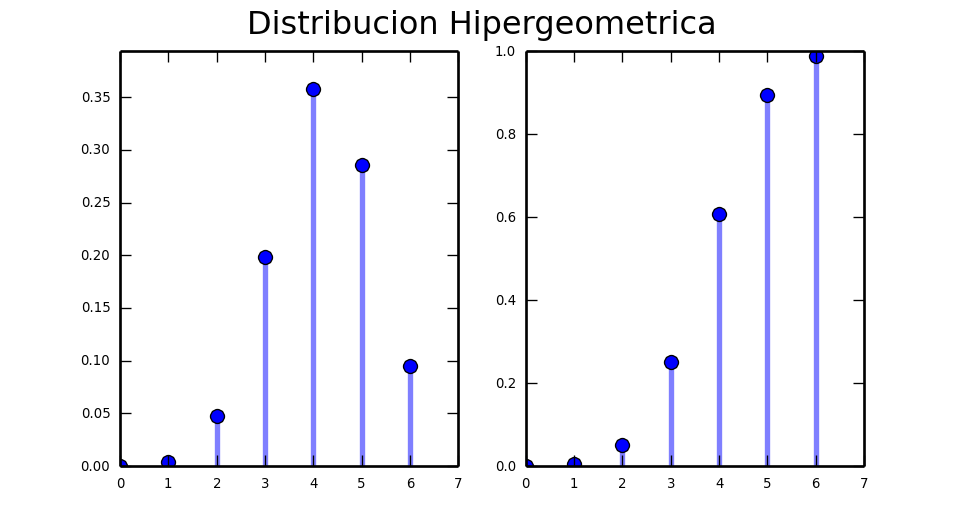
3.7 Distribución uniforme
3.7.1 Distribución uniforme
Una v.a. continua \(X\) diremos que tiene una distribución uniforme sobre el intervalo real \((a,b)\) ,con \(a<b\), si su función de densidad es
\[ f_X(x)=\left\{\begin{array}{ll} \frac1{b-a} & \mbox{si } a<x<b\\ 0 & \mbox{en cualquier otro caso} \end{array} \right. \]
3.7.2 Distribución uniforme
Ejercicio
Comprobar que el área comprendida entre \(f_X\) y la horizontal vale 1.
\[ \begin{eqnarray*} \displaystyle\int_{-\infty}^{+\infty} f_x(x)\cdot dx=\int_{a}^{b} \frac{1}{b-a} \cdot dx=\left.\frac{x}{b-a}\right]_{x=a}^{x=b}=\frac{b}{b-a}-\frac{a}{b-a}= \frac{b-a}{b-a}=1. \end{eqnarray*} \]
3.7.3 Función de distribución uniforme.
Su función de distribución es
\[ F_X(x)=\left\{\begin{array}{ll} 0 & \mbox{si } x\leq a\\ \frac{x-a}{b-a} & \mbox{si } a<x<b\\ 1 & \mbox{si } b\leq x \end{array} \right. \]
3.7.4 Función de distribución uniforme: cálculo.
Efectivamente:
- Si \(x\leq a\) entonces \[F_X(x)=\displaystyle\int_{-\infty}^{x} f(t)\cdot dt= \displaystyle\int_{-\infty}^{x} 0\cdot dt.\]
- Si \(a<x<b\) entonces
\[ \begin{eqnarray*} F_X(x)&=&\int_{-\infty}^{x} f(t)\cdot dt= \int_{-\infty}^{a} 0\cdot dt+\int_{-a}^{x} \frac1{b-a} \cdot dt\\ &=& 0 +\left.\frac{t}{b-a}\right]_{t=a}^{t=x}= \frac{x}{b-a}-\frac{a}{b-a}=\frac{x-a}{b-a}. \end{eqnarray*} \]
3.7.5 Función de distribución uniforme: cálculo.
- Por último si \(x\geq b\) entonces
\[ \begin{eqnarray*} F_X(x)&=&\displaystyle\int_{-\infty}^{x} f(t) dt=\int_{a}^{b} \frac{1}{b-a} dt= \left. \frac{t}{b-a} \right]_{t=a}^{t=b} \\&=& \frac{b}{b-a}-\frac{a}{b-a}=\frac{b-a}{b-a}=1. \end{eqnarray*} \]
Si \(X\) es una v.a. uniforme en el intervalo \((a,b)\) lo denotaremos por \(U(a,b)\).
3.7.6 Esperanza y varianza para una v.a. \(X\) \(U(a,b)\)
Calculemos la esperanza de \(X\)
\[ \begin{eqnarray*} E(X)&=&\displaystyle\int_{-\infty}^{+\infty} x\cdot f_X(x) dx =\int_{a}^{b} x \cdot \frac{1}{b-a} dx = \left.\frac{x^2}{2\cdot (b-a)}\right]_{x=a}^{x=b}\\ &=&\frac{b^2}{2\cdot (b-a)}-\frac{a^2}{2\cdot (b-a)}\\ &=& \frac{b^2-a^2}{2\cdot (b-a)}=\frac{(b+a)\cdot (b-a)}{2\cdot (b-a)}\\ &=& \frac{b+a}{2}. \end{eqnarray*} \]
3.7.7 Esperanza y varianza para una v.a. \(X\) \(U(a,b)\)
Calculemos la esperanza de \(X^2\)
\[ \begin{eqnarray*} E(X^2)&=&\displaystyle\int_{-\infty}^{+\infty} x^2 f_X(x) dx=\int_{a}^{b} x^2 \frac1{b-a} dx =\left.\frac{x^3}{3\cdot (b-a)}\right]_{x=a}^{x=b} \\ &=&\frac{b^3-a^3}{3\cdot (b-a)}=\frac{b^2+ab+a^2}{3}. \end{eqnarray*} \]
Ejercicio
Demostrad que la igualdad \(b^3-a^3=(b-a)\cdot (b^2+ab+a^2)\) es cierta.
Utilizadla para el cálculo final del valor de \(E(X^2)\).
3.7.8 Esperanza y varianza para una v.a. \(X\) \(U(a,b)\).
Calculemos \(Var(X)\).
\[ \begin{eqnarray*} Var(X)&=&\displaystyle E(X^2)-(E(X))^2=\frac{b^2+ab+a^2}3-\left(\frac{b+a}2\right)^2\\&=& \frac{b^2+ab+a^2}{3}-\frac{b^2+2ab+a^2}{4}\\ &=& \frac{4\cdot (b^2+ab+a^2)-3\cdot (b^2+2ab+a^2)}{4\cdot 3} \\ &=& \frac{b^2-2ab+a^2}{12}= \frac{(b-a)^2}{12}. \end{eqnarray*} \]
3.7.9 Gráficas \(U(0,1)\)
El código de la gráficas de una \(U(0,1)\)
par(mfrow=c(1,2))
a=0;b=1
curve(dunif(x,a,b),xlim=c(a-0.25,b+0.25),ylim=c(0,max(1/(b-a)+0.05,0.1)),
col="blue",main=paste0("Función densidad U(",a,",",b,")"),
ylab=paste0("dunif(x,",a,", ",b,")")
)
curve(punif(x,a,b),xlim=c(a-1,b+1),ylim=c(0,1.1),
col="blue",main=paste0("Función de distribución U(",a,",",b,")"),
ylab=paste0("punif(x,",a,", ",b,")",cex.axis=0.8)
)
par(mfrow=c(1,1))3.7.10 Gráficas \(U(0,1)\)
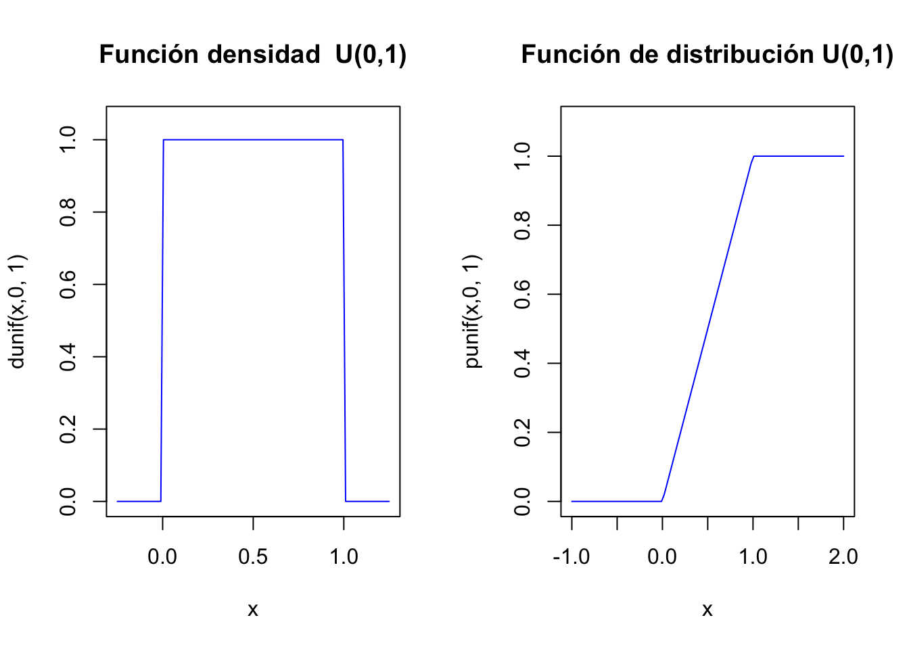
3.7.11 Gráficas interactivas \(U(a,b)\)
Para ejecutar el siguiente gráfico interactivo, solamente tienes que cargar el paquete shiny en tu ordenador y luego copiar/pegar las siguientes instrucciones. De este modo podrás observar los cambios en las distribuciones variando los parámetros.
fluidPage(
fluidRow(
column(4,
sliderInput("a1", label = "Parámetro a",
min = -5, max = 9, value =0 , step = 0.1)
),
column(4,
sliderInput("b1", label = "Parámetro b",
min = 10, max = 15, value = 5, step = 0.1)
),
column(4,
sliderInput("x1", label="x", value=9, min = -5, max = 15, step = 0.1)
)
)
)
renderPlot({
a=input$a1
b=input$b1
x=input$x1
par(mfrow=c(1,2))
#a=0;b=1;x=0.25
xx=c(seq(min(a,x),min(b,x),by=0.001))
curve(dunif(x,a,b),xlim=c(a-0.25,b+0.25),ylim=c(0,max(1/(b-a)+0.05,0.1)),col="blue",main=paste0("Función densidad U(",a,",",b,")"),
ylab=paste0("dunif(x,",a,", ",b,")"),xaxt="n")
axis(side=1, at=c(a,x,b), labels = TRUE)
polygon(x=c(a,xx,min(x,b)),y=c(0,dunif(xx,a,b),0),
density=20,col="skyblue")
curve(punif(x,a,b),xlim=c(a-1,b+1),ylim=c(0,1.1),col="blue",main=paste0("Función de distribución U(",a,",",b,")"),
ylab=paste0("punif(x,",a,", ",b,")"),xaxt="n",yaxt="n")
segments(x0=x,y0=0,x1=x,y1=punif(x,a,b),col="red",lty=2)
segments(x0=a-1.01,y0=punif(x,a,b),x1=x,y1=punif(x,a,b),col="red",lty=2)
axis(side=2, at=c(0,round(punif(x,a,b),1),2), labels = TRUE)
axis(side=1, at=c(a,x,b), labels = TRUE)
par(mfrow=c(1,1))
})3.7.12 Cambio lineal v.a. uniforme.
Si \(X\) sigue una distribución \(U(a,b)\) entonces \(Z=\frac{X-a}{b-a}\) sigue una distribución \(U(0,1)\).
Propiedad: Cambio lineal distribución uniforme
Sea \(X\) una v.a \(U(a,b)\)
Si \(scale\not=0\) y \(loc\) son dos constantes reales entonces
- si \(scale>0\) \(T=scale\cdot X+loc\) sigue una ley \(U(scale\cdot a +loc,scale\cdot b +loc)\)
- si \(scale<0\) \(T=scale\cdot X+loc\) sigue una ley \(U(scale\cdot b +loc,scale\cdot a +loc)\)
3.7.13 Cambio lineal v.a. uniforme.
Supongamos que \(X\) sigue una ley \(U(a,b)\), que \(scale>0\) y que \(T=\frac{X-loc}{scale}\)
Así tenemos que
\[ F_X(x)=P(X\leq x)=\left\{\begin{array}{ll} 0 & \mbox{ si } x\leq a\\\frac{x-a}{b-a} & \mbox{ si } a\leq x\leq b \\1 & \mbox{ si } b\leq x\end{array}\right. \]
3.7.14 Cambio lineal v.a. uniforme.
Si \(T\) es una \(U(scale\cdot a +loc,scale\cdot b +loc)\) su función de distribución será
\[ \begin{eqnarray*} F_T(t)&=&P(T\leq t)= P(scale\cdot X+ loc\leq t)= P\left(X\leq \frac{t-loc}{scale}\right)=F_X\left(\frac{t-loc}{scale}\right)\\ &=& \left\{\begin{array}{ll} 0 & \mbox{ si } \frac{t-loc}{scale}\leq a\\\frac{\frac{t-loc}{scale}-a}{b-a} & \mbox{ si } a\leq \frac{t-loc}{scale}\leq b\\1 & \mbox{ si } b\leq \frac{t-loc}{scale}\end{array}\right.= \left\{\begin{array}{ll} 0 & \mbox{ si } t\leq scale\cdot a +loc \\ \frac{t-(scale\cdot a+loc)}{scale\cdot (b-a)} & \mbox{ si } scale\cdot a+loc \leq t\leq scale\cdot b+loc \\ 1 & \mbox{ si } scale\cdot b+loc\leq t \end{array}\right.\\ & = & \left\{\begin{array}{ll} 0 & \mbox{ si } t\leq scale\cdot a +loc \\ \frac{t-(scale\cdot a+loc)}{scale\cdot b+loc-(scale\cdot a+loc)} & \mbox{ si } scale\cdot a+loc \leq t\leq scale\cdot b+loc \\ 1 & \mbox{ si } scale\cdot b+loc\leq t\end{array}\right. \end{eqnarray*} \]
que es la función de distribución de una v.a. \(U(scale\cdot a+loc,scale\cdot b+loc)\), como queríamos demostrar.
3.7.15 Cambio lineal v.a. uniforme.
Ejercicio
Sea \(X\) una variable \(U(0,1)\) y sea \(T=scale\cdot X+loc\):
Si \(T\) es \(U(-5,5)\) ¿qué valores toman \(scale\) y \(loc\)?
Si \(T\) \(loc=-10\) y \(scale=10\) ¿qué distribución de probabilidad sigue \(T\) ?
Si \(T\) \(loc=0\) y \(scale=-1\) ¿qué distribución probabilidad sigue \(T\) ?
3.7.16 Resumen v.a con distribución uniforme, \(U(a,b)\)
| Distribución uniforme | \(U(a,b)\) |
|---|---|
| Dominio | \(D_X=(a,b)\) |
| \(f_{X}(x)\) | \(\left\{\begin{array}{ll}\frac1{b-a} & \mbox{si } a<x<b\\ 0 & \mbox{en cualquier otro caso}\end{array} \right.\) |
| \(F_X(x)=P(X\leq X)=\) | \(\left\{\begin{array}{ll} 0 & \mbox{ si } x\leq a\\\frac{x-a}{b-a} & \mbox{ si } a\leq x\leq b\\1 & \mbox{ si } b\leq x\end{array}\right.\) |
| \(E(X)=\) | \(\frac{a+b}2\) |
| \(Var(X)=\) | \(\frac{(b-a)^2}{12}\) |
3.7.17 Cálculos con R
Sea \(X\) una \(v.a.\) y \(U(-1,1)\). Como es habitual , aunque ahora la variable es continua, las funciones de densidad y de distribución son
## [1] 0.5## [1] 0.75## [1] -0.5502232 -0.4271506 -0.0515360 0.8052209 0.89835233.7.18 Cálculos con R
Por defecto dunif(x,min=0,max=1)
## [1] 1## [1] 0.5## [1] 0.382302539 0.009313886 0.351767001 0.294007361 0.0715815153.7.19 Cálculos con python
Sea \(X\) una \(v.a.\) \(U(-1,1)\) \(a=-1\) y \(b=1\) así que \(loc=-1\) y \(scale=b-a=1-(-1)=2.\)
## 0.5## 0.03.7.20 Cálculos con python
Generación de aletorios uniforme
## array([-0.13130712, 0.44373584, 0.84003749, 0.99276314, 0.55711495,
## 0.57189655, 0.41104188, -0.48420543, -0.25396462, 0.44079897,
## 0.47255484, -0.92572661, 0.91764789, 0.59087709, 0.30382537,
## -0.8360301 , -0.67844932, -0.52156538, -0.95760308, -0.70339524,
## -0.13938373, 0.48412195, -0.10573555, -0.13289361, 0.17680277,
## 0.64712591, 0.26338469, 0.79499151, -0.46070278, -0.72991293])3.7.21 Cálculos con python
Los valores de los parámetros con por defecto loc=0, scale=1
## 1.0## 0.5## array([ 0.75642967, 0.52571097, 0.07461812, 0.78195806, 0.43384242])3.8 Cuantiles de variables aleatorias
3.8.1 Cuantiles
Cuantiles
Si \(X\) es una v.a. con dominio \(D_X\) y \(0<q<1\) llamaremos cuantil de orden \(q\) al menor valor perteneciente al dominio \(x_q\in D_X\) tal que
\[P(X\leq x_q)\geq q.\]
En R, cada distribución \(X\) tiene la función qX(p,...) que devuelve precisamente el cuantil \(x_p\) tal que \(P(X\leq x_p)\geq p.\)
3.8.2 Cuantiles
Por ejemplo si \(X\) es una B(5,0.5)
## [1] 0.03125 0.18750 0.50000 0.81250 0.96875 1.00000## [1] 2 2 3## [1] 2 3 33.8.3 Cuantiles
Como \(X\) sigue una \(B(5,0.5)\), recordemos que \(D_X=\{0,1,2,\ldots,n=5\}.\) y que su función de distribución es
\[ \small{ F_x(x)=P(X\leq x)= \left\{ \begin{array}{ll} 0 & x< 0 \\ 0.03125 & \mbox{ si } 0 \leq x< 1 \\ 0.18750 & \mbox{ si } 1 \leq x< 2 \\ 0.50000 & \mbox{ si } 2 \leq x< 3 \\ 0.81250 & \mbox{ si } 3 \leq x< 4 \\ 0.96875 & \mbox{ si } 4 \leq x< 5 \\ 1.00000 & \mbox{ si } 5\leq x \\ \end{array} \right.} \]
3.8.4 Cuantiles
El cuantil \(q=0.3\) es el primer valor \(x\in D_X\) tal que \(F_X(x)=P(X\leq x_{0.3})\geq 0.3.\) así que el primer valor es \(x_{0.3}=2\) ya que \(F_X(2)=P(X\leq 2)=0.5 \geq 0.3\).
Ejercicio
Calcular los cuantiles de \(0.6\) y \(0.8\) de una \(B(5,0.5).\)
En general podemos considerar que \(F^{-1}\) es la función que nos da los cuantiles (es decir si \(F^{-1}(p)\) da más de una valor tomaremos como antiimagen el valor más pequeño que esté dentro del dominio \(D_X\)).
3.8.5 Cuantiles
Dado parchís
\(Sea\) \(X\) la variable aleatoria uniforme discreta que nos da el número de puntos obtenidos en el lanzamiento de una dado de parchís (seis caras y numeradas del 1 al 6).
Su dominio es \(D_X=\{1,2,3,4,5,6\}\) su función de probabilidad es
\[ P_X(x)=P(X=x)= \left\{ \begin{array}{ll} \frac{1}{6} & \mbox{ si } x=1,2,3,4,5,6. \\ 0 & \mbox{ en otro caso }. \end{array} \right. \]
Y su función de distribución
\[ F_X(x)= P(X\leq x)= \left\{ \begin{array}{ll} 0 & \mbox{ si } x<1. \\ \frac{k}{6} & \mbox{ si } k\leq x< l+1 \mbox{ para } x= 1,2,3,4,6. \\ 1 & \mbox{si } x \geq 6. \end{array} \right. \]
3.8.6 Cuantiles
Si lo queremos simular en R tenemos la función
ddado=function(x,n=6) {
sapply(x,FUN=function(x) {
if( x %in% c(1:n)){return(1/n)} else {return(0)}})
}
ddado(1.5,n=6)## [1] 0## [1] 0.1666667 0.1666667 0.1666667 0.1666667 0.1666667 0.1666667 0.0000000
## [8] 0.0000000 0.0000000 0.00000003.8.7 Cuantiles
Ahora calculemos \(F_X(X)=P(X\leq x)\) con una función de R
pdado=function(x,n=6)
{
sapply(x,FUN=function(y){ if (y<1){ return(0)}else{if(y>=n){return(1)} else
{return(sum(ddado(c(1:(floor(y))),n=n)))}}})
}
pdado(0:11,6)## [1] 0.0000000 0.1666667 0.3333333 0.5000000 0.6666667 0.8333333 1.0000000
## [8] 1.0000000 1.0000000 1.0000000 1.0000000 1.00000003.8.8 Cuantiles
Construyamos la función de cuantiles para esta variable: dado \(0\leq p \leq 1\), será el mínimo de la antiimagen de \(p\) mediante la función de distribución \(F_X^{-1}(p)\)
3.8.9 Cuantiles
Efectivamente los cuantiles del dado \(X\) son
## [1] NA## [1] NA## [1] 1 3 3 6 NA NA3.8.10 Cuantiles
Por ejemplo si \(X\) es una \(B(n=10,p=0.3)\)
## [1] 0.36765818 0.18187591 0.82617679 0.58497444 0.95886983 0.10179894
## [7] 0.75688767 0.24369144 0.67806543 0.06275295## [1] 2 2 4 3 6 1 4 2 4 1## [1] 2 2 4 3 6 1 4 2 4 13.8.11 Cuantiles
Por ejemplo si \(X\) es una \(BN(n=3,p=0.1)\)
## [1] 0.36765818 0.18187591 0.82617679 0.58497444 0.95886983 0.10179894
## [7] 0.75688767 0.24369144 0.67806543 0.06275295## [1] 19 12 41 27 61 9 36 15 32 7## [1] 18 9 6 46 66 49 24 44 19 263.8.12 Un ejemplo gráficas cuantiles \(B(n,p)\) y \(Po(\lambda)\).
Para ejecutar el siguiente gráfico interactivo, solamente tienes que cargar el paquete shiny en tu ordenador y luego copiar/pegar las siguientes instrucciones. De este modo podrás observar los cambios en las distribuciones variando los parámetros.
fluidPage(
fluidRow(
column(3,
sliderInput("nq", label = "Par. n B(n,p)",
min = 1, max = 20, value =10 , step = 1)
),
column(3,
sliderInput("pq", label = "Par. p B(n,p)",
min = 0.01, max = 0.99, value = 0.5, step = 0.1)
),
column(3,
sliderInput("qq", label=" Cuantil q", value=0.75, min = 0.01, max = 0.99, step = 0.01)
),
column(3,
sliderInput("lq", label="Par. lambda Po(lambda)", value=5, min = 1, max = 20, step = 1)
)
)
)
renderPlot({
n=input$nq
p=input$pq
q=input$qq
lambda=input$lq
par(mfrow=c(1,2))
#n=10;p=0.5;q=0.75;lambda=5
#xx=c(seq(min(a,x),min(b,x),by=0.001))
probsB=pbinom(0:n,n,p)
curve(pbinom(x,n,p),xlim=c(0-0.25,n+0.25),ylim=c(0,max(probsB+0.05,0.1)),
col="blue",main=paste0("Función distribución\n B(n=",n,", p=",p,")"),
ylab=paste0("dbinom(x,",n,", ",p,")"),yaxt="n")
segments(x0 = qbinom(q,n,p),y0 = 0,x1 = qbinom(q,n,p),y1 = q,lty=2,col="red")
segments(x0 = qbinom(q,n,p),y0 = q,x1 = -0.25,y1 = q,lty=2,col="red")
ytick=c(0.0,q,1)
axis(side=2, at=ytick, labels = TRUE)
axis(side=1, at=qbinom(q,n,p), labels = TRUE)
curve(ppois(x,lambda),xlim=c(0-0.25,2.5*lambda),ylim=c(0,1+0.1),
col="blue",main=paste0("Función distribución \n Po(lambda=",lambda,")"),
ylab=paste0("dpois(x, lambda",lambda,")"),yaxt="n")
segments(x0 = qpois(q,lambda),y0 = 0,x1 = qpois(q,lambda),y1 = q,lty=2,col="red")
segments(x0 = qpois(q,lambda),y0 = q,x1 = -0.25,y1 = q,lty=2,col="red")
ytick=c(0.0,q,1)
axis(side=2, at=ytick, labels = TRUE)
axis(side=1, at=qpois(q,lambda), labels = TRUE)
par(mfrow=c(1,1))
})3.8.13 Generador de números aleatorios método de la transformada inversa
Una de las utilidades de la distribución uniforme \(U(0,1)\) es que si sabemos generar números aletorios de una uniforme podemos generar números aleatorios de cualquier variable aleatoria
Notemos que \(F^{-1}(p)\), bajo estas condiciones, es la función que nos da los cuantiles de \(X\) para cada \(0\leq p\leq 1\).
3.8.14 Generador de números aleatorios método de la transformada inversa
Demostración
Bajo esta condiciones \(F^{-1}(y)\) nos da un solo valor y como además es creciente tenemos que
\[ P(Y\leq y )=P\left(F_X^{-1}(U)\leq y\right)=P(U\leq F_X(y))=F_Z(F_X(y))=F_X(y). \]
Luego \(X\) es \(Y\) tienen la misma función de distribución.
Este método se pueden generar observaciones de una v.a. discreta a partir de observaciones aleatorias de una v.a. \(U(0,1)\). El método es similar a la propiedad anterior pero tomando como \(F^{-1}\) la función que nos da los cuantiles de la v.a. discreta.
3.9 Distribución exponencial
3.9.1 Distribución del tiempo entre dos eventos Poisson
Supongamos que tenemos un proceso Poisson con parámetro \(\lambda\) en una unidad de tiempo.
Sea \(t\) una cantidad de tiempo en u.t. entonces \(N_{t}=\) número de eventos en el intervalo de tiempo \((0,t]\) es una \(Po(\lambda\cdot t)\). Consideremos la v.a. \(T=\) tiempo transcurrido entre dos eventos Poisson consecutivos.
Sea \(t>0\), entonces
\[ \begin{eqnarray*} P(T>t)&=&P(\mbox{Cero eventos en el intervalo}(0,t])\\ &=&P(N_{t}=0)= \frac{(\lambda t)^0}{0!} e^{-\lambda t}=e^{-\lambda t}. \end{eqnarray*} \]
3.9.2 Distribución del tiempo entre dos eventos Poisson
Tomando complementarios, la función de distribución de \(T\) será
\[ F_{T}(t)= P(T\leq t)=1-P(X>t)=\left\{\begin{array}{ll} 0 &\mbox{ si } t\leq 0\\ 1-e^{-\lambda t}& \mbox{ si } t>0\end{array}\right. \]
Entonces, derivando respecto de \(t\) en la expresión anterior
\[ f_{T}(t)=\left\{\begin{array}{ll}\lambda \cdot e^{-\lambda t} & \mbox{ si } t>0\\ 0 & \mbox{ si } t\leq 0 \end{array}\right. \]
La exponencial se denota por \(Exp(\lambda)\)
3.9.3 Propiedad de la falta de memoria
Sea \(X\) una v.a. \(Exp(\lambda)\) entonces
\[P(X>s+t\big|X>s)=P(X>t)\mbox{ para todo } s,t\in \mathbb{R}\]
Demostración
Si \(X\) es una v.a. \(Exp(\lambda)\) tenemos que \(P(X>x)=1-P(X\leq x)=1-(1-e^{-\lambda\cdot x})=e^{-\lambda\cdot x}\) para todo \(x>0\)
\(P(X>s+t\big|X>s)=\frac{P(\{X>s+t\}\cap \{X>s\})}{P(X>s)}=\frac{P(X>s+t)}{P(X>s)}=\frac{e^{-\lambda\cdot (s+t)}}{e^{-\lambda\cdot s}}= \frac{e^{-\lambda\cdot s}\cdot e^{-\lambda\cdot t} }{e^{-\lambda\cdot s}}=e^{-\lambda\cdot t}=P(X>t).\)
3.9.4 Ejemplo distribución exponencial
El clásico problema del peluquero.
Una pequeña peluquería es regentada por un único peluquero. El peluquero está esperando al próximo cliente mientras lee el periódico.
Supongamos que \(N_T=\) número de clientes que llegan en el intervalo \([0,t)\) es una \(Po(\lambda\cdot t)\) entonces la variable \(T=\) tiempo entre dos clientes consecutivos sigue una ley \(Exp(\lambda)\).
Supongamos que \(t\) se mide en horas y que \(\lambda=4\) es el promedio de clientes por hora.
En este ejemplo la propiedad de la pérdida de memoria significa que si el peluquero lleva ya esperando más de \(s>0.25\) un cuarto de hora la probabilidad de que espere \(t=1/6\) de hora más (10 minutos) no cambia sigue siendo \(P(T>0.25+1/6|T>0.25)=P(T>1/6).\)
3.9.5 Ejemplo distribución exponencial
El tiempo esperado (en horas) hasta el siguiente cliente es
\[ E(X)=\frac{1}{\lambda}=\frac{1}{4}=0.25. \]
y la varianza es
\[ Var(X)=\frac{1}{\lambda^2}=\frac{1}{4^2}=0.0625. \]
Por último ¿Cuál es la probabilidad de que nuestro peluquero esté sin clientes (leyendo el periódico) más de 30 minutos (0.5 horas)?
\[ P(X>0.5)=1-P(X\leq 0.5)=1-(1-e^{-4\cdot 0.5 })=e^{-2})=0.1353353. \]
3.9.6 Ejemplo distribución exponencial
Si queremos hacer los cálculos con R,
## [1] 0.7768698## [1] 0.2231302## [1] 0.22313023.9.7 Cálculos con R
La función de densidad, de distribución y la generación aleatoria de valores de una exponencial, se pueden obtener en R con:
## [1] 2.991013## [1] 0.7768698## [1] 0.5069426 0.4497573 0.2876943 0.5514840 1.0552252 0.3168070 0.2488148
## [8] 0.2377065 0.2974863 0.21216463.9.8 Cálculos con python
Y en python con:
## 2.9991001349865014## 0.77686983985157021## array([ 0.15499327, 1.05325315, 0.07223187, 0.16641392, 0.08401903,
## 0.14978722, 1.43823676, 0.04218512, 0.07783778, 0.386594 ])3.9.9 Resumen v.a con distribución exponencial, \(Exp(\lambda)\)
| \(X\) | \(Exp(\lambda)\) |
|---|---|
| \(D_X=\) | \((0,+\infty)\) |
| \(f_{X}(x)=\) | \(\left\{\begin{array}{ll} \lambda e^{-\lambda x} & \mbox{ si } x>0\\ 0 & \mbox{ si } x\leq 0 \end{array}\right.\) |
| \(F_X(x)=P(X\leq X)=\) | \(\left\{\begin{array}{ll} 0 &\mbox{si } x\leq 0\\ 1-e^{-\lambda x}& \mbox{si } x>0\end{array}\right.\) |
| \(E(X)=\frac{1}{\lambda}\) | \(Var(X)=\frac{1}{\lambda^2}\) |
3.9.10 Gráficas densidad y distribución \(Exp(\lambda=10)\)
lambda=10
par(mfrow=c(1,2))
curve(dexp(x,rate=lambda),xlim=c(-0.05,round(qexp(0.99,rate=lambda,2),2)+0.25),
ylim=c(0,dexp(0,lambda)+0.1),col="blue",
main=paste0("Función densidad Exp(",lambda,")"),
ylab=paste0("dexp(x,rate=",lambda,")"))
curve(pexp(x,rate=lambda),xlim=c(-0.05,qexp(0.999,10)),ylim=c(0,1.1),col="blue",
main=paste0("Función de distribución Exp(",lambda,")"),
ylab=paste0("pexp(x,rate=",lambda,")"))
par(mfrow=c(1,1))3.9.11 Gráficas densidad y distribución \(Exp(\lambda=10)\)

3.9.12 Gráficas densidad y distribución \(Exp(\lambda=10)\)
Ejercicio
Consultad en el manual de python scipy.stats.
Dibujad la función de densidad y de distribución de una \(Exp(10).\)
3.9.13 Gráficas interactivas de una \(X\) \(Exp(\lambda)\).
Para ejecutar el siguiente gráfico interactivo, solamente tienes que cargar el paquete shiny en tu ordenador y luego copiar/pegar las siguientes instrucciones. De este modo podrás observar los cambios en las distribuciones variando los parámetros.
fluidPage(
fluidRow(
column(4,
sliderInput("le", label = "lambda",
min = 0.1, max = 3, value =1 , step = 0.1)
),
column(4,
sliderInput("xe", label = "X=x",
min = 0, max = 5, value = 5, step = 0.1)
),
column(4,
sliderInput("pe", label = "Cuantil p",
min = 0.01, max = 1, value = 0.75, step = 0.01)
)
)
)
renderPlot({
lambda=input$le
p=input$pe
x=input$xe
#lambda=10;p=0.75;x=0.4
xx=seq(0,x,by=0.001)
par(mfrow=c(1,2))
curve(dexp(x,rate=lambda),xlim=c(-0.05,round(qexp(0.999,rate=lambda),2)),
ylim=c(0,dexp(0,lambda)+0.1),col="blue",main=paste0("Función densidad Exp(",lambda,")"),
ylab=paste0("dexp(x,",lambda,")"),xaxt="n")
axis(side=1, at=c(0,x,round(qexp(0.999,rate=lambda),2)),cex.axis=0.8)
polygon(x=c(0,xx,max(x,xx)),y=c(0,dexp(xx, rate=lambda),0),
density=20,col="skyblue")
curve(pexp(x,rate=lambda),xlim=c(0.01,qexp(0.999,rate=lambda)+0.1),ylim=c(0,1.1),col="blue",
main=paste0("Función de distribución Exp(",lambda,")"),
ylab=paste0("pexp(x,",lambda,")"),xaxt="n",yaxt="n")
segments(x0=qexp(p,lambda),x1=qexp(p,lambda),y0=0,y1=p,col="red",lty=2)
segments(x0=0-0.05,y0=p,x1=qexp(p,lambda),y1=p,col="red",lty=2)
axis(side=2, at=seq(0,1,0.1), labels = TRUE)
axis(side=1, at=seq(0,round(qexp(0.999,rate=lambda),2),by=0.1), labels = TRUE)
par(mfrow=c(1,1))
})3.9.14 Ejercicio: las bombillas que no envejecen.
Ejercicio
Supongamos que compramos una bombilla led que promete un valor esperado de duración de 10000 (1.14 años) horas de funcionamiento continuo. Además nos aseguran que si \(X\) es el número de horas de funcionamiento continuo de una bombilla led sigue una ley exponencial
- Si \(X\) es \(Exp(\lambda)\) ¿cuál es el valor del parámetro \(\lambda\)?.
- ¿Cuál es la probabilidad de que una bombilla led ilumine más de 2 años?
- Supongamos que ya tengo una bombilla led funcionando 1 año ¿Cuál es la probabilidad de que dure dos años más?
- ¿Cuál es la varianza de la duración en horas de este tipo de bombillas?
3.10 Distribución normal o Gaussiana
3.10.1 Distribución normal o Gaussiana
Una de las más variables aleatorias continua más populares son las llamadas distribuciones normales o de Gaussiana .
\[ f_{X}(x)=\frac1{\sqrt{2\cdot\pi\cdot\sigma^2}} e^{-\frac{1}{2}\cdot\left(\frac{x-\mu}{\sigma}\right)^2} \]
para todo \(x\in \mathbb{R}.\)
3.10.2 Distribución normal o Gaussiana
La gráfica de esta función es la conocida campana de Gauss.
La v.a. normal con \(\mu=0\) y \(\sigma=1\) recibe el nombre de normal estándar y se suele denotar por la letra \(Z\) normal \(N(0,1)\).
3.10.3 Distribución normal o Gaussiana
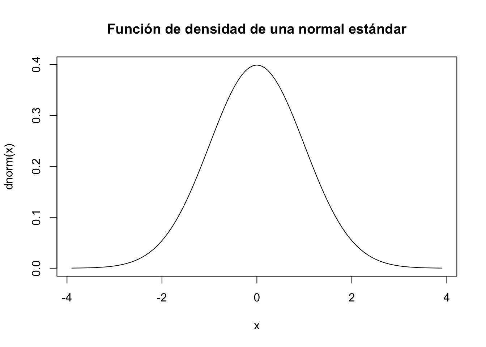
3.10.4 Propiedades de la densidad normal
Sea \(X\) una v.a. \(N(\mu,\sigma)\) y sea \(f_{X}\) su función de densidad. Entonces:
- Evidentemente \(f_{X}\) verifica todas las propiedades de las funciones de densidad.
- \(f_{X}(\mu-x)=f_{X}(\mu+x)\) es simétrica respecto de la recta \(x=\mu\)
- \(f_{X}\) alcanza el máximo en \(x=\mu\)
- Si \(F_{X}\) la función de distribución de \(X\) entonces \(F_{X}(\mu+x)=1-F_{X}(\mu-x)\).
- En particular si \(Z\) es una \(N(0,1)\) entonces \(F_{Z}(-x)=1-F_{Z}(x)\)
- \(Z=\frac{X-\mu}{\sigma}\) es una v.a. \(N(0,1)\) y \(X=\sigma\cdot Z+\mu\) es una \(N(\mu,\sigma)\) donde \(Z\) es la normal estándar.
3.10.5 Función de distribución N(0,1)
Su función de distribución es, como sabemos :
\[ F(x)=\displaystyle\int_{-\infty}^{x} {1\over{\sqrt{2\cdot \pi\cdot\sigma^2}}} e^{-{1\over 2}{\left({t-\mu}\over{\sigma}\right)}^2} dt. \]
Que no tiene ninguna expresión algebraica “decente”. Es por esta razón, y por comodidad, que esta función está tabulada o hay que calcular con un programa.
Cuando una variable tiene distribución normal con parámetros \(\mu\) y \(\sigma\) la denotamos con \(X\) sigue un ley de distribución \(N(\mu,\sigma).\)
3.10.6 Resumen v.a con distribución normal, \(N(\mu,\sigma)\)
| \(X\) | \(N(\mu,\sigma)\) |
|---|---|
| \(D_X=\) | \(\mathbb{R}=(-\infty,+\infty)\) |
| \(f_{X}(x)\) | \(=\frac{1}{\sqrt{2\pi\cdot\sigma^2}}\cdot e^{\frac{-(x-\mu)^2}{2\cdot \sigma^2}}\mbox{ para todo }x\in \mathbb{R}.\) |
| \(F_X(x)=P(X\leq X)=\) | pnorm(x,mean=mu,sd=sigma). Utilizad funciones de R o python |
| \(E(X)=\mu.\) | \(Var(X)=\sigma^2.\) |
3.10.7 Cálculos con R
De forma la forma habitual los parámetros son mean y sd la media \(\mu\) y la desviación estándar \(\sigma\). Por ejemplo para una \(X\sim N(\mu=1,\sigma=2)\) la función de densidad \(f_X(2)\) se puede calcular como
## [1] 0.1760327y la función de distribución \(F_X(2) = P(X\leq 2)\) como
## [1] 0.69146253.10.8 Cálculos con R
El cuantil \(x_{0.95}\) es el valor que cumple \(P(X\leq x_{0.95})=0.95\) como
## [1] 4.289707Y la generación aleatoria de valores según \(X\) como
## [1] 2.19858942 0.03274072 -0.59125322 -0.88202614 1.951605053.10.9 Cálculos con python
De forma la forma habitual importaremos norm de scipy.stas los parámetros son loc y scale la media \(\mu\) y la desviación estándar \(\sigma\).
Por ejemplo para una \(X\sim N(\mu=1,\sigma=2)\), la función de densidad \(f_X(2)\):
## 0.17603266338214976y la función de distribución \(F_X(2) = P(X\leq 2)\):
## 0.691462461274013123.10.10 Cálculos con python
El cuantil \(x_{0.95}\) es el valor que cumple \(P(X\leq x_{0.95})=0.95\) como
## 4.2897072539029448Y la generación aleatoria de valores según \(X\) como
## array([ 3.63212497, 5.51064493, 2.04830019, 0.60524788, 3.00854634])3.10.11 Cálculos python
Ejercicio
Consultad SciPy.org para dibujar las funciones de densidad y de distribución con python.
3.10.12 Propiedades de la distribución normal.
La función de densidad de la distribución normal tiene las siguientes propiedades:
- La función \(f_X\) es continua.
- \(\int_{-\infty}^{+\infty} \frac{1}{\sqrt{2\cdot\pi\cdot \sigma^2}}\cdot e^{-\frac{1}{2}\cdot \left(\frac{x-\mu}{\sigma}\right)^2} dx =1.\) (propiedad de todas las densidades).
- \(f(\mu+x)=f(\mu-x)\).
- \(F(\mu-x)=1-F(\mu+x)\).
3.10.13 Propiedades de la distribución normal.

3.10.14 Propiedades de la distribución normal
- \(\lim\limits_{x\to+\infty}f(x)=\lim\limits_{x\to-\infty}f(x)=0\) es decir tiene asíntota horizontal a derecha e izquierda.
- \(f\) es estrictamente creciente si \(x<\mu\) y decreciente si \(x>\mu\).
- Alcanza el máximo en \(x=\mu\) y en este punto vale \(f(\mu)=\frac1{\sqrt{2\pi}\sigma}\)
- Tiene dos puntos de inflexión en \(x=\mu+\sigma\) y en \(x=\mu-\sigma\).
3.10.15 Propiedades de la distribución normal.
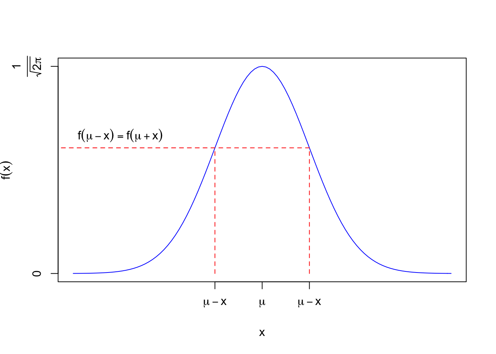
3.10.16 Gráficas interactivas parámetros normal
Para ejecutar el siguiente gráfico interactivo, solamente tienes que cargar el paquete shiny en tu ordenador y luego copiar/pegar las siguientes instrucciones. De este modo podrás observar los cambios en las distribuciones variando los parámetros.
fluidPage(
fluidRow(
column(3,
sliderInput("m1", label = "mu1",
min = -10, max = 10, value =0 , step = 0.05)
),
column(3,
sliderInput("s1", label = "sigma1",
min =0.1, max = 5, value = 1, step = 0.1)
),
column(3,
sliderInput("m2", label="mu2", value=4, min = -10, max = 10, step = 0.05)
),
column(3,
sliderInput("s2", label = "sigma2",
min =0.1, max = 5, value = 1, step = 0.1)
)
)
)
renderPlot({
m1=input$m1
m2=input$m2
s1=input$s1
s2=input$s2
mins2=min(c(s1^2,s2^2))
m=min(c(qnorm(0.01,m1,s1),qnorm(0.01,m2,s2)))
M=max(c(qnorm(0.99,m1,s1),qnorm(0.99,m2,s2)))
curve(dnorm(x,m1,s1),xlim=c(m,M),ylim=c(0,1/sqrt(2*pi*mins2)),col="red",lty=1)
legend("toplef",legend=c(expression(N(mu[1],sigma[1])),expression(N(mu[2],sigma[2]))),col=c("red","blue"),lty=c(1,2))
curve(dnorm(x,m2,s2),add=TRUE,col="blue",lty=2)
})3.10.17 Transformaciones lineales de variables aleatorias normales
Sea \(X\) una variable \(N(\mu,\sigma)\) entonces la variable \(Y=a X+b\) con \(a\not=0,b\in\cal{R}\) tiene distribución \(N(a\mu+b, |a| \sigma)\)
En particular si \(X\) sigue una \(N(\mu,\sigma)\), tomando \(a=\frac1{\sigma}\) y \(b= \frac{-\mu}{\sigma}\) obtenemos la tipificación o estandarización de la v.a.
\[Z={{X-\mu}\over {\sigma}}\] se distribuye \(N(0,1)\), es decir \(E(X)=0\) y \(Var(X)=1\).
3.10.18 Transformaciones lineales de variables aleatorias normales
Esta propiedad es muy útil, ya que utilizándola sólo necesitaremos tabular la \(N(0,1)\).
Si \(Z\) sigue una distribución \(N(0,1)\) diremos que \(Z\) sigue una distribución normal estándar.
Por lo tanto podemos calcular cualquier distribución normal desde la distribución normal estándar:
\[ F_X(x)=F_Z \left(\frac{x-\mu}{\sigma}\right). \]
3.10.19 Propiedades de la distribución normal estándar
Sea \(Z\) una \(N(0,1)\).
Como en este caso \(\mu=0\) y \(\sigma=1\) tenemos que algunas de las propiedades anteriores se simplifican incluso más:
- De \(f_X(\mu-x)=f_X(\mu+x)\) obtenemos \(f_Z(-x)=f_Z(x)\)
- De \(F_X(\mu-x)=1-F_X(\mu+x)\) obtenemos \(F_Z(-x)=1-F(x).\)
- Dado \(\delta>0\), \[ P(-\delta\leq Z \leq \delta)=F_{Z}(\delta)-F_{Z}(-\delta)=F_Z(\delta)-(1-F_Z(\delta))= 2\cdot F_Z(\delta)-1. \]
3.10.20 Cálculos con la distribución normal
Ejercicio Cálculos con la distribución normal estándar
Sea \(Z\) una distribución \(N(0,1)\), calcular las siguientes probabilidades en función de \(F_Z\).
- \(P(-4\leq Z \leq 4).\)
- \(P(-2\leq Z \leq 2).\)
- \(P(Z\leq -2).\)
- \(P( Z \leq 2).\)
- \(P( Z \geq 2).\)
- \(P( Z > 2).\)
- \(P( Z = 2).\)
- \(P( Z \geq -2).\)
3.10.21 Cálculos con la distribución normal
Resolvamos el ejercicio
- \(P(-4\leq Z \leq 4)=F_{Z}(4)-F_{Z}(-4)=2\cdot F_Z(4)-1\)
- \(P(-2\leq Z \leq 2)=F_{Z}(2)-F_{Z}(-2)=2\cdot F_Z(2)-1\)
- \(P(Z\leq -2)=F_Z(-2)=1-F_Z(2)\)
- \(P( Z \leq 2)=F_{Z}(2)\)
- \(P( Z \geq 2)=1-P(Z<2)=1-F_{Z}(2)\)
- \(P( Z > 2)=1-P(Z\leq 2)=1-F_{Z}(2)\)
- \(P( Z = 2)=0\) ya que es una distribución continua.
- \(P( Z \geq -2)=1-P(Z< -2)=1-F_{Z}(-2)=1-(1-F_Z(2))=F_Z(2).\)
3.10.22 Relación entre una normal y la normal estándar.
Si \(X\) es una normal \(N(\mu,\sigma)\) y \(Z\) es su variable tipificada, es decir, \(Z=\frac{X-\mu}{\sigma}\) es una \(N(0,1)\) entonces:
\[ P(X\leq x)=P\left(\frac{X-\mu}{\sigma}\leq \frac{x-\mu}{\sigma}\right)=F_{Z}\left(\frac{x-\mu}{\sigma}\right). \]
3.10.23 Relación entre una distribución normal y la normal estándar.
- Cuando tengamos un intervalo
\[ \begin{eqnarray*} P(a<X<b)&=&P\left(\frac{a-\mu}{\sigma}<\frac{X-\mu}{\sigma}<\frac{b-\mu}{\sigma}\right)= \\ &=& P\left(\frac{a-\mu}{\sigma}<Z<\frac{b-\mu}{\sigma}\right)\\ &=&F_{Z}\left(\frac{b-\mu}{\sigma}\right)- F_{Z}\left(\frac{a-\mu}{\sigma}\right) \end{eqnarray*} \]
- Si \(\delta>0\) \(P\left(\mu-\delta\leq X \leq\mu+\delta\right)=2\cdot F_Z\left(\frac{\delta}{\sigma}\right)-1\)
3.10.24 Ejemplo cálculo probabilidades normal
Ejercicio
Sea \(X\) una normal com media \(2\) y varianza \(4\). Calcular
- \(P(1< X< 2).\)
- \(P(X>3).\)
3.10.25 Ejemplo cálculo probabilidades normal
Solución
El cálculo de la primera pregunta es
\[ \begin{eqnarray*} P(1< X< 2)&=& P\left(\frac{1-2}{2}<\frac{X-2}{2}<\frac{2-2}{2}\right)= P\left(\frac{-1}{2}<Z<0\right)\\ &=& F_{Z}(0)-F_{Z}(-0.5)=\frac12-1+F_{Z}(0.5)=-\frac12+F_Z(0.5). \end{eqnarray*} \]
La segunda cuestión se resuelve así
\[ P(X>3)=P\left(\frac{X-2}2>\frac{3-2}{2}\right)=P(Z>0.5)=1-F_{Z}(0.5). \]
3.10.26 Ejemplo normal con R y python
Ejercicio
Sea \(X\) una normal com media \(2\) y varianza \(4\). Calcular con R y con python las probabilidades
- \(P(1< X< 2).\)
- \(P(X>3).\)
3.10.27 Ejemplo normal con R y python
Solución con R
## [1] 0.09870633## [1] 0.4012937## [1] 0.4012937Solución con Python
## 0.098706325682923701## 0.4012936743170763## (array(2.0), array(16.0))3.10.28 La distribución normal aproxima otras distribuciones
En los temas que siguen veremos como, bajo determinadas condiciones:
- La distribución normal puede aproximar la distribución binomial
- La distribución normal puede aproximar la distribución Poisson
- La distribución normal es la distribución límite de la media aritmética.